СП 503.1325800.2021 «Трубопроводы из непластифицированного поливинилхлорида само»
О документе: разработчики, утверждение, регистрация, ключевые слова
СВОД ПРАВИЛ
СП 503.1325800.2021
Правила проектирования, строительства и эксплуатации
Издание официальное
Москва 2021
- 1 ИСПОЛНИТЕЛЬ - Общество с ограниченной ответственностью «Русвинил»
- 2 ВНЕСЕН Техническим комитетом по стандартизации ТК 465 «Строительство»
- 3 ПОДГОТОВЛЕН к утверждению Департаментом градостроительной деятель- ности и архитектуры Министерства строительства и жилищно-коммунального хозяйства Российской Федерации (Минстрой России)
- 4 УТВЕРЖДЕН приказом Министерства строительства и жилищно-коммуналь- ного хозяйства Российской Федерации от 16 июля 2021 г. № 476/пр и введен в действие с 17 января 2022 г.
- 5 ЗАРЕГИСТРИРОВАН Федеральным агентством по техническому регулирова- нию и метрологии (Росстандарт)
- 6 ВВЕДЕН ВПЕРВЫЕ
В случае пересмотра (замены) или отмены настоящего свода правил соответствую- щее уведомление будет опубликовано в установленном порядке. Соответствующая инфор- мация, уведомления и тексты размещаются также в информационной системе общего пользования - на официальном сайте разработчика (Минстрой России) в сети Интернет
© Минстрой России, 2021
Настоящий нормативный документ не может быть полностью или частично воспроизве- ден, тиражирован и распространен в качестве официального издания на территории Российской Федерации без разрешения Минстроя России
Дата введения - 2022-01-17
УДК
ОКС 93.025 93.030
Ключевые слова: трубопроводы, непластифицированный поливинилхлорид, самотечные си- стемы водоотведения, проектирование, строительство, эксплуатация, трубы, фасонные ча- сти, монтажные работы, структурированная стенка, химическая стойкость, гидравлический расчет
Руководитель организации-разработчика
ООО «Русвинил»
наименование организации
Генеральный директор
Г. Надольны
должность
личная подпись
инициалы, фамилия
Руководитель разработки
эксперт
А.А. Погорелов
должность
личная подпись
инициалы, фамилия
Исполнитель
Н.И. Маракушин
должность
личная подпись
инициалы, фамилия
СОИСПОЛНИТЕЛИ
Руководитель организации-разработчика
ООО «Три-С»
наименование организации
Генеральный директор
Ю.С. Захаров
должность
личная подпись
инициалы, фамилия
Руководитель разработки
Генеральный директор
Ю.С. Захаров
должность
личная подпись
инициалы, фамилия
Исполнитель
начальник отдела
Е.В. Кухарчук
должность
личная подпись
инициалы, фамилия
Введение
Настоящий свод правил разработан в целях обеспечения требований Федерального закона от 30 декабря 2009 г. № 384-ФЗ «Технический регламент о безопасности зданий и сооружений» и с учетом требований к системам внутренней и наружной канализации, установленных СП 30.13330.2016 «СНиП 2.04.01-85* Внутренний водопровод и канализация зданий» и СП 32.13330.2018 «СНиП 2.04.03-85 Канализация. Наружные сети и сооружения».
Правила проектирования, строительства и эксплуатации
Pipelines from unplasticized polyvinylchloride of non-pressure underground drainage and sewerage. Rules of design, construction and operation
1Область применения
Свод правил устанавливает правила проектирования, строительства и эксплуатации наружных и внутренних самотечных систем водоотведения бытовых сточных вод, промышленной и ливневой канализации, с использованием труб и фасонных частей со сплошной и структурированной стенкой, изготовленных из непластифицированного поливинилхлорида (НПВХ).
2Нормативные ссылки
В настоящем своде правил использованы нормативные ссылки на следующие документы:
ГОСТ 12.0.004-2015 Система стандартов безопасности труда. Организация обучения безопасности труда. Общие положения
ГОСТ 12.1.004-91 Система стандартов безопасности труда. Пожарная безопасность. Общие требования
ГОСТ 12.1.046-2014 Система стандартов безопасности труда. Строительство. Нормы освещения строительных площадок
ГОСТ 25100-2020 Грунты. Классификация
ГОСТ 22733-2016 Грунты. Методы лабораторного определения максимальной плотности
ГОСТ 23407-78 Ограждения инвентарные строительных площадок и участков производства строительно-монтажных работ. Технические условия
ГОСТ 24297-2013 Верификация закупленной продукции. Организация проведения и методы контроля
ГОСТ 32412-2013 Трубы и фасонные части из непластифицированного поливинилхлорида для систем внутренней канализации. Технические условия
ГОСТ 32413-2013 Трубы и фасонные части из непластифицированного поливинилхлорида для систем наружной канализации. Технические условия
ГОСТ ISO 4065-2019 Трубы из термопластов. Таблица универсальных толщин стенок
ГОСТ Р 51613-2000 Трубы напорные из непластифицированного поливинилхлорида. Технические условия
ГОСТ Р 54475-2011 Трубы полимерные со структурированной стенкой и фасонные части к ним для систем наружной канализации. Технические условия
СП 22.13330.2016 «СНиП 2.02.01-83* Основания зданий и сооружений» (с изменениями № 1, № 2, № 3)
СП 30.13330.2020 «СНиП 2.04.01-85* Внутренний водопровод и канализация зданий»
СП 32.13330.2018 «СНиП 2.04.03-85 Канализация. Наружные сети и сооружения»
СП 42.13330.2016 «СНиП 2.07.01-89* Градостроительство. Планировка и застройка городских и сельских поселений» (с изменениями № 1, № 2)
СП 45.13330.2017 «СНиП 3.02.01-87 Земляные сооружения, основания и фундаменты» (с изменениями № 1, № 2)
СП 70.13330.2012 «СНиП 3.03.01-87 Несущие и ограждающие конструкции» (с изменениями № 1, № 3, № 4)
СП 73.13330.2016 «СНиП 3.05.01-85 Внутренние санитарно-технические системы зданий» (с изменением № 1)
СП 129.13330.2019 «СНиП 3.05.04-85 Наружные сети и сооружения водоснабжения и канализации»
СП 249.1325800.2016 Коммуникации подземные. Проектирование и строительство закрытым и открытым способами (с изменением № 1)
СП 272.1325800.2016 Системы водоотведения городские и поселковые. Правила обследования (с изменением № 1)
СП 399.1325800.2018 Системы водоснабжения и канализации наружные из полимерных материалов. Правила проектирования и монтажа
СП 2.2.3670-20 Санитарно-эпидемиологические требования к условиям труда
Примечание - При пользовании настоящим сводом правил целесообразно проверить действие ссылочных документов в информационной системе общего пользования - на официальном сайте федерального органа исполнительной власти в сфере стандартизации в сети Интернет или по ежегодному информационному указателю «Национальные стандарты», который опубликован по состоянию на 1 января текущего года, и по выпускам ежемесячного информационного указателя «Национальные стандарты» за текущий год. Если заменен ссылочный документ, на который дана недатированная ссылка, то рекомендуется использовать действующую версию этого документа с учетом всех внесенных в данную версию изменений. Если заменен ссылочный документ, на который дана датированная ссылка, то рекомендуется использовать версию этого документа с указанным выше годом утверждения (принятия). Если после утверждения настоящего свода правил в ссылочный документ, на который дана датированная ссылка, внесено изменение, затрагивающее положение, на которое дана ссылка, то это положение рекомендуется применять без учета данного изменения. Если ссылочный документ отменен без замены, то положение, в котором дана ссылка на него, рекомендуется применять в части, не затрагивающей эту ссылку. Сведения о действии свода правил целесообразно проверить в Федеральном информационном фонде стандартов.
3Термины, определения и сокращения
В настоящем своде правил применены термины по ГОСТ 24297, ГОСТ 25100, ГОСТ ISO 4065, СП 73.13330, СП 129.13330, СП 272.1325800, а также следующие термины с соответствующими определениями:
- 3.1.1 глубина прокладки трубопровода
- Расстояние от поверхности земли до шелыги трубопровода.
- 3.1.2 глубина траншеи
- Расстояние между дном траншеи и поверхностью земли.
- 3.1.3 дно траншеи
- Плоскость, которая используется для устройства фундамента или подстилающего слоя.
- 3.1.4 жесткость фасонной части
- Характеристика механических свойств фасонной части, используемая в качестве меры деформационной устойчивости при радиальных внешних нагрузках.
- 3.1.5 заделка трубопровода
- Область обсыпки трубопровода, включающая подстилающий слой, слой боковой обсыпки и защитный слой.
- 3.1.6 зазор между склеиваемыми поверхностями труб
- Частное между средним наружным диаметром трубы d em и средним внутренним диаметром раструба d sm .
- 3.1.7 защитный слой обсыпки
- Слой грунта непосредственно над трубопроводом.
- 3.1.8 код соответствия
- Маркировка на трубах и фасонных частях, указывающая на их область применения.
- 3.1.9 кольцевая жесткость
- Характеристика механических свойств трубы, используемая в качестве меры деформационной устойчивости при радиальных внешних нагрузках.
- 3.1.10 конструктивная высота e c, мм
- Расстояние вдоль радиальной оси между внутренней стенкой трубы и вершиной ребра жесткости/гофра.
- 3.1.11 конструкционный элемент заводской готовности
- Изделие, изготовленное до начала производства работ на основании действующих нормативных документов или при контроле производителя.
- 3.1.12 местный грунт
- Грунт в естественном залегании непосредственно на территории строительной площадки.
- 3.1.13 минимальная ширина траншеи
- Минимальный размер между стенками траншеи на верхней границе подстилающего слоя или расстояние между опалубкой на любой глубине траншеи, необходимый для обеспечения безопасного производства работ.
- 3.1.14 номинальная кольцевая жесткость SN, кН/м²
- Число для характеристики минимально допустимой кольцевой жесткости трубы или фасонной части, определяемое на основании экспериментальных данных.
- 3.1.15 номинальный внутренний диаметр DN, мм
- Численное обозначение типоразмера труб и фасонных частей, которое приблизительно соответствует внутреннему диаметру выпускаемых труб и фасонных частей.
- 3.1.16 номинальный диаметр DN/OD, мм
- Численное значение наружного диаметра труб, используемое для характеристики размерного ряда.
- 3.1.17 номинальный диаметр переходной муфты d 3, мм
- Максимальный наружный диаметр трубы, которую можно использовать для устройства соединений с использованием соответствующей переходной муфты.
- 3.1.18 номинальный наружный диаметр d n, мм
- Наружный диаметр, соответствующий размерному ряду серии DN/OD.
- 3.1.19 овальность трубопровода
- Разница последовательно измеренных значений наружного диаметра в одном поперечном сечении трубопровода.
- 3.1.20 основание трубопровода
- Слой грунта или бетона для стабилизации дна траншеи/котлована при прокладке трубопровода в нестабильных, скальных или водонасыщенных грунтах.
- 3.1.21 отношение диаметра к толщине стенки трубы SDR
- Числовой параметр для определения серии труб, который соответствует примерному отношению номинального наружного диаметра d n к номинальной толщине стенки трубы e n.
- 3.1.22 подстилающий слой
- Часть строительного сооружения, обеспечивающая позиционирование трубопровода между дном траншеи, слоем боковой обсыпки и защитным слоем. Подстилающий слой состоит из верхнего и нижнего подстилающих слоев. При укладке трубопровода непосредственно на природный грунт последний считается нижним подстилающим слоем.
- 3.1.23 седловой отвод
- Конструктивный элемент для устройства примыканий, соединение которых с трубопроводом проводится либо путем механического крепления, либо с помощью клея.
- 3.1.24 слой засыпки
- Слой материала между верхней границей заделки трубопровода и поверхностью земли (улицы или рельсового пути) или насыпи.
- 3.1.25 слой обсыпки пазух
- Слой засыпки между подстилающим и защитным слоями.
- 3.1.26 средний внутренний диаметр раструба d sm, мм
- Среднее арифметическое значение результатов измерения внутреннего диаметра в одном поперечном сечении раструба.
- 3.1.27 средний внутренний диаметр трубы/фасонной части d im, мм
- Среднее арифметическое значение результатов измерений внутреннего диаметра трубы/фасонной части в точках, равномерно распределенных по периметру трубы в одном поперечном сечении.
- 3.1.28 средний наружный диаметр d em, мм
- Частное измеренного наружного периметра трубы или трубного конца фасонной части в любом поперечном сечении и числа π (≈ 3,142), округленное в бо ́ льшую сторону с точностью до одной значащей цифры после запятой.
- 3.1.29 толщина стенки трубы e , мм
- Измеренная толщина стенки в любом месте трубы.
- 3.1.30 трасса трубопровода
- Расположение в пространстве канализационного трубопровода.
- 3.1.31 трассировка
- Описание трассы в форме последовательности элементов (прямая, круг, переходная кривая, градиент).
- 3.1.32 трубы и фасонные части со сплошной стенкой
- Трубы и фасонные части с гладкой внутренней и наружной поверхностью, стенки которых имеют однородную структуру и изготовляются из формовочной массы одного состава .
- 3.1.33 трубы и фасонные части со структурированной стенкой
- Трубы и фасонные части, стенки которых имеют либо многослойную конструкцию, либо сложный профиль.
- 3.1.34 фасонная часть
- Деталь или сборочная единица трубопровода, предназначенная для соединения его отдельных участков с изменением или без изменения направления или проходного сечения и изготовленная из материала одной марки.
- 3.1.35 химическая стойкость
- Способность материала сохранять свои механические и физические свойства при воздействии различных химических сред.
- 3.1.36 шелыга
- Верхняя образующая часть поверхности трубы любого сечения. В настоящем своде правил применены следующие сокращения: БНК - бутадиен-нитрильный каучук; НПВХ - непластифицированный поливинилхлорид; ЭПДК - этилен-пропилен-диен-каучук.
4Характеристики труб и фасонных частей из НПВХ
- с гладкой наружной и внутренней поверхностью (тип А);
- с гладкой внутренней и структурированной наружной поверхностью (тип В). Размеры труб и фасонных частей со структурированной стенкой приведены в приложении А.
Таблица 4.1 Характеристики НПВХ
| Показатель | Значение показателя |
|---|---|
| Модуль упругости | E (1 мин) ≥ 3200 МПа |
| Средняя плотность | ≈ 1,5 г/см³ |
| Средний коэффициент линейного расширения | ≈ 0,08 мм/(м ∙ К) |
| Теплопроводность | ≈ 0,16 Вт/(м ∙ К) |
| Поверхностное электрическое сопротивление | Свыше 10 12 Ом |
| Коэффициент Пуассона | 0,4 |
5Трубы и фасонные части из НПВХ
5.1Размеры труб и фасонных частей с сплошной стенкой
| В миллиметрах | В миллиметрах | ||
|---|---|---|---|
| Средний наружный диаметр d em | Средний наружный диаметр d em | ||
| минимальный d em, min | максимальный d em, max | ||
| 110 | 110 | 110,0 | 110,3 |
| 125 | 125 | 125,0 | 125,3 |
| 160 | 160 | 160,0 | 160,4 |
| 200 | 200 | 200,0 | 200,5 |
| 250 | 250 | 250,0 | 250,5 |
| 315 | 315 | 315,0 | 315,6 |
| (355) | 355 | 355,0 | 355,7 |
| 400 | 400 | 400,0 | 400,7 |
| (450) | 450 | 450,0 | 450,8 |
| 500 | 500 | 500,0 | 500,9 |
| 630 | 630 | 630,0 | 631,1 |
| (710) | 710 | 710,0 | 711,2 |
| 800 | 800 | 800,0 | 801,3 |
| (900) | 900 | 900,0 | 901,5 |
| 1000 | 1000 | 1000,0 | 1001,6 |
[ГОСТ 32413-2013, пункт 4.1.1]
Рисунок 5.1 - Размеры фаски трубного конца
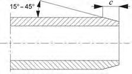
Таблица 5.1 Длина фаски трубного конца
| Номинальный наруж- ный диаметр трубы d n | Длина фаски с | Номинальный наруж- ный диаметр трубы d n | Длина фаски с |
|---|---|---|---|
| 110 | 6 | 450 | 17 |
| 125 | 6 | 500 | 18 |
| 160 | 7 | 630 | 23 |
| 200 | 9 | 710 | 28 |
| 250 | 9 | 800 | 32 |
| 315 | 12 | 900 | 36 |
| 355 | 13 | 1000 | 41 |
| 400 | 15 | - | - |
В миллиметрах
- а) отводы:
- 1) отвод, изогнутый под произвольным углом α (рисунки Б.1, Б.2);
- 2) отвод, изогнутый с радиусом кривизны оси R (рисунки Б.3, Б.4);
- б) муфты:
- 1) двухраструбные (рисунок Б.5);
- 2) надвижные (рисунок Б.6);
- 3) для устройства примыканий к колодцам (рисунок Б.7);
- 4) для устройства примыканий к ограждающим конструкциям (рисунок Б.8);
- 5) для устройства врезок в трубопроводы (рисунок Б.9);
- в) переходы:
- 1) для соединения с трубопроводами из керамических труб (рисунок Б.10);
- 2) с изменением номинального внутреннего диаметра (рисунок Б.11);
- г) вставки для устройства примыканий к ограждающим конструкциям (рисунок Б.12);
- д) тройники:
- 1) тройник с примыканием под номинальным углом α (рисунки Б.13, Б.14);
- 2) тройник с радиусом кривизны оси примыкания R (рисунки Б.15, Б.16);
- е) седловые отводы (рисунок Б.17);
- ж) заглушки (рисунок Б.18);
- и) ревизии (рисунок Б.19).
5.2Размеры труб и фасонных частей со структурированной стенкой типа А
- многослойные конструкции со средним вспененным слоем - тип А1 (рисунок А.1, а );
- с полыми секциями в стенках, ориентированными вдоль продольной оси, - тип А1 (рисунок А.1, б );
- с кольцевыми и спиральными полыми секциями - тип А2 (рисунок А.1, в ).
Таблица 5.2 -
Значения допусков, установленных для ряда DN/OD В миллиметрах
| Номинальный диаметр DN/OD | Средний наружный диаметр 1) | Средний наружный диаметр 1) | Номинальный диаметр DN/OD | Средний наружный диаметр 1) | Средний наружный диаметр 1) |
|---|---|---|---|---|---|
| Номинальный диаметр DN/OD | d em, min | d em, max | Номинальный диаметр DN/OD | d em, min | d em, max |
| Номинальный диаметр DN/OD | d em, min | Жесткий допуск | Номинальный диаметр DN/OD | d em, min | Жесткий допуск |
| 110 | 110,0 | 110,3 | 1200 | 1200,0 | 1201,9 |
| 125 | 125,0 | 125,3 | 1400 | 1400,0 | 1402,2 |
| 160 | 160,0 | 160,4 | 1600 | 1600,0 | 1602,6 |
| 200 | 200,0 | 200,5 | 1800 | 1800,0 | 1802,9 |
| 250 | 250,0 | 250,5 | 2000 | 2000,0 | 2003,2 |
| 315 | 315,0 | 315,6 | 2200 | 2200,0 | 2203,5 |
| 400 | 400,0 | 400,7 | 2400 | 2400,0 | 2403,8 |
| 500 | 500,0 | 500,9 | 2500 | 2500,0 | 2504,0 |
| 630 | 630,0 | 631,1 | 2600 | 2600,0 | 2604,2 |
| 800 | 800,0 | 801,3 | 2800 | 2800,0 | 2804,5 |
| 1000 | 1000,0 | 1001,6 | 3000 | 3000,0 | 3004,8 |
1) Если трубные концы изготовлены с соблюдением жесткого допуска, то они маркируются буквами «СТ».
Таблица 5.3 Номинальные диаметры, минимальный средний внутренний диаметр, толщина внутреннего слоя и длина раструба труб типа А
В миллиметрах
| Минимальная толщина стенки | Минимальная толщина стенки | Минимальная толщина стенки | Раструб | ||
|---|---|---|---|---|---|
| Минимальный средний внут- ренний диаметр для размер- | Минимальный средний внут- ренний диаметр для размер- | А1 | А1 | А2 | Раструб |
| ного ряда DN/OD | ного ряда DN/OD | Многослойная стенка | Стенка с полостями | - | Раструб |
| DN/OD | d im, min | e 4, min | e 4, min | e 5, min | A min |
| 110 | 97 | 0,4 | 0,6 | 1,0 | 32 |
| 125 | 107 | 0,4 | 0,6 | 1,0 | 32 |
| 160 | 135 | 0,5 | 0,8 | 1,0 | 42 |
| 200 | 172 | 0,6 | 1,0 | 1,1 | 50 |
| 250 | 216 | 0,7 | 1,1 | 1,4 | 55 |
| 315 | 270 | 0,8 | 1,2 | 1,6 | 62 |
| 400 | 340 | 1,0 | 1,5 | 2,0 | 70 |
| 500 | 432 | 1,3 | 2,1 | 2,8 | 80 |
| 630 | 540 | 1,6 | 2,6 | 3,3 | 93 |
| 800 | 680 | 2,0 | 3,0 | 4,1 | 110 |
| 1000 | 864 | 2,5 | 3,5 | 5,0 | 130 |
| 1200 | 1037 | 2,8 | 4,7 | 5,0 | 150 |
| 1400 | 1210 | 5,0 | 5,0 | 5,0 | 168 |
| 1600 | 1382 | 5,0 | 5,0 | 5,0 | 192 |
| 1800 | 1555 | 5,0 | 5,0 | 5,0 | 216 |
| 2000 | 1728 | 7,0 | 7,0 | 7,0 | 240 |
| 2200 | 1901 | 7,0 | 7,0 | 7,0 | 264 |
| 2400 | 2074 | 7,0 | 7,0 | 7,0 | 288 |
| 2500 | 2160 | 7,0 | 7,0 | 7,0 | 300 |
| 2600 | 2246 | 7,0 | 7,0 | 7,0 | 312 |
| 2800 | 2419 | 7,0 | 7,0 | 7,0 | 336 |
| 3000 | 2592 | 10,0 | 10,0 | 10,0 | 360 |
Примечание - Фактический внутренний диаметр трубы зависит от материала, структуры стенки и кольцевой жесткости. Он может превышать значения, установленные в настоящей таблице. Дополнительные данные следует получить у производителя.
Таблица 5.4 Номинальные диаметры, минимальный средний внутренний диаметр, толщина внутреннего слоя и длина раструба для размерного ряда DN/ID
В миллиметрах
| Минимальный средний внут- | Минимальный средний внут- | А2 | А2 | А2 | диаметр для размер- ного ряда DN/ID Многослойная стенка |
|---|---|---|---|---|---|
| - | - | ренний Стенка с полостями | диаметр для размер- ного ряда DN/ID Многослойная стенка | ||
| A min | DN/OD d im, min | диаметр для размер- ного ряда DN/ID Многослойная стенка | |||
| e 4, min | e 4, min | e 5, min | 100 | 95 | |
| 0,4 | 0,6 | 1,0 | 32 | 125 | 120 |
| - | - | 1,0 | 38 | 150 | 145 |
| - | - | 1,0 | 43 | 200 | 195 |
| - | - | 1,1 | 54 | 225 | 220 |
| 0,7 | 1,1 | 1,4 | 55 | 250 | 245 |
| - | - | 1,5 | 59 |
Окончание таблицы 5.4
В миллиметрах
| Минимальная толщина стенки | Минимальная толщина стенки | Минимальная толщина стенки | Раструб | ||
|---|---|---|---|---|---|
| Минимальный средний внут- ренний диаметр для размер- | Минимальный средний внут- ренний диаметр для размер- | А1 | А1 | А2 | Раструб |
| ного ряда DN/ID | ного ряда DN/ID | Многослойная стенка | Стенка с полостями | - | Раструб |
| DN/OD | d im, min | e 4, min | e 4, min | e 5, min | A min |
| 300 | 294 | - | - | 1,7 | 64 |
| 400 | 392 | - | - | 2,3 | 74 |
| 500 | 490 | - | - | 3,0 | 85 |
| 600 | 588 | - | - | 3,5 | 96 |
| 800 | 785 | - | - | 4,5 | 118 |
| 1000 | 985 | - | - | 5,0 | 140 |
| 1200 | 1185 | - | - | 5,0 | 162 |
| 1400 | 1385 | - | - | 5,0 | 182 |
| 1600 | 1584 | - | - | 5,0 | 208 |
| 1800 | 1782 | - | - | 5,0 | 234 |
| 2000 | 1980 | - | - | 7,0 | 260 |
| 2200 | 2178 | - | - | 7,0 | 286 |
| 2400 | 2376 | - | - | 7,0 | 312 |
| 2500 | 2475 | - | - | 7,0 | 325 |
| 2600 | 2574 | - | - | 7,0 | 338 |
| 2800 | 2772 | - | - | 7,0 | 364 |
| 3000 | 2970 | - | - | 10,0 | 390 |
Примечание - Минимальный средний внутренний диаметр раструба фасонной части d sm, min не должен превышать 98 % определенного наименьшего среднего внутреннего диаметра трубы, для соединения с которой он используется.
Таблица 5.5 Требуемое минимальное значение толщины гладких трубных концов, производимых литьем под давлением
В миллиметрах
| Наружный диаметр d e | Минимально допустимая толщина стенки e min |
|---|---|
| ≤ 500 | d e /51 ≥ 3,2 |
| >500 | 9,8 |
- а) отводы:
- 1) отвод c малым радиусом кривизны оси α (рисунок В.1);
- 2) отвод с большим радиусом кривизны оси R (рисунок В.2);
- б) муфты:
- 1) двухраструбные (рисунок В.3, а );
- 2) надвижные (рисунок В.3, б );
- в) переход с изменением внутреннего диаметра (рисунок В.4);
- г) тройники:
- 1) тройник с примыканием под номинальным углом α (рисунок В.5);
- 2) тройник с радиусом кривизны оси примыкания R (рисунок В.6).
5.3Размеры труб и фасонных частей со структурированной стенкой типа В
- сплошные стенки с ребрами жесткости (рисунок А.3, а );
- стенки с ребрами жесткости, выполненными путем навивки полого круглого профиля (конструкция стенки может предусматривать наличие дополнительного усиливающего профиля из другого полимерного материала) (рисунок А.3, б );
- стенки с кольцевыми полыми ребрами жесткости (рисунок А.3, в ).
Таблица 5.6 Номинальные диаметры, минимальный средний внутренний диаметр, минимальная толщина стенки внутреннего слоя и длина раструба
В миллиметрах
| Минимальный средний внутренний диаметр для размерного ряда DN/OD | Минимальный средний внутренний диаметр для размерного ряда DN/OD | Минимальная толщина стенки внутреннего слоя | Минимальная толщина стенки внутреннего слоя | Раструб |
|---|---|---|---|---|
| DN/OD | d im, min | e 4, min | e 5, min | A min |
| 110 | 97 | 1,0 | 1,0 | 32 |
| 125 | 107 | 1,1 | 1,0 | 35 |
| 160 | 135 | 1,2 | 1,0 | 42 |
| 200 | 172 | 1,4 | 1,1 | 50 |
| 250 | 216 | 1,7 | 1,4 | 55 |
| 315 | 270 | 1,9 | 1,6 | 62 |
| 400 | 340 | 2,3 | 2,0 | 70 |
| 500 | 432 | 2,8 | 2,8 | 80 |
| 630 | 540 | 3,3 | 3,3 | 93 |
| 800 | 680 | 4,1 | 4,1 | 110 |
| 1000 | 864 | 5,0 | 5,0 | 130 |
| 1200 | 1037 | 5,0 | 5,0 | 150 |
| 1400 | 1210 | 5,0 | 5,0 | 168 |
| 1600 | 1382 | 5,0 | 5,0 | 192 |
| 1800 | 1555 | 5,0 | 5,0 | 216 |
| 2000 | 1728 | 7,0 | 7,0 | 240 |
| 2200 | 1901 | 7,0 | 7,0 | 264 |
| 2400 | 2074 | 7,0 | 7,0 | 288 |
| 2500 | 2160 | 7,0 | 7,0 | 300 |
| 2600 | 2246 | 7,0 | 7,0 | 312 |
| 2800 | 2419 | 7,0 | 7,0 | 336 |
| 3000 | 2592 | 10,0 | 10,0 | 360 |
Примечание A min определяется для раструба с эластичным уплотнительным кольцом. При формировании требований к этому размеру следует учитывать материал трубы и ее структуру. Для труб, длина которых превышает 6 м, рекомендуется увеличивать размер A min по сравнению с приведенными в настоящей таблице значениями. Фактический внутренний диаметр трубы зависит от материала, структуры стенки и кольцевой жесткости. Он может превышать значения, установленные в настоящей таблице. Дополнительные данные можно получить у производителя.
Таблица 5.7 Номинальные диаметры, минимальный средний внутренний диаметр, минимальная толщина стенки внутреннего слоя и длина раструба
В миллиметрах
| Минимальный средний внутренний диаметр для размерного ряда DN/ID | Минимальный средний внутренний диаметр для размерного ряда DN/ID | Минимальная толщина стенки внутреннего слоя | Минимальная толщина стенки внутреннего слоя | Раструб |
|---|---|---|---|---|
| DN/ID | d im, min | e 4, min | e 5, min | A min |
| 100 | 95 | 1,0 | 1,0 | 32 |
| 125 | 120 | 1,2 | 1,0 | 38 |
| 150 | 145 | 1,3 | 1,0 | 43 |
| 200 | 195 | 1,5 | 1,1 | 54 |
| 225 | 220 | 1,7 | 1,4 | 55 |
| 250 | 245 | 1,8 | 1,5 | 59 |
| 300 | 294 | 2,0 | 1,7 | 64 |
| 400 | 392 | 2,5 | 2,3 | 74 |
| 500 | 490 | 3,0 | 3,0 | 85 |
| 600 | 588 | 3,5 | 3,5 | 96 |
| 800 | 785 | 4,5 | 4,5 | 118 |
| 1000 | 985 | 5,0 | 5,0 | 140 |
| 1200 | 1185 | 5,0 | 5,0 | 162 |
| 1400 | 1385 | 5,0 | 5,0 | 182 |
| 1600 | 1584 | 5,0 | 5,0 | 208 |
| 1800 | 1782 | 5,0 | 5,0 | 234 |
| 2000 | 1980 | 7,0 | 7,0 | 260 |
| 2200 | 2178 | 7,0 | 7,0 | 286 |
| 2400 | 2376 | 7,0 | 7,0 | 312 |
| 2500 | 2475 | 7,0 | 7,0 | 325 |
| 2600 | 2574 | 7,0 | 7,0 | 338 |
| 2800 | 2772 | 7,0 | 7,0 | 364 |
| 3000 | 2970 | 10,0 | 10,0 | 390 |
Примечание A min определяется для раструба с эластичным уплотнительным кольцом. При формировании требований к этому размеру следует учитывать материал трубы и ее структуру. Для труб, длина которых превышает 6 м, рекомендуется увеличивать размер A min по сравнению с приведенными в настоящей таблице значениями. Наименьший средний внутренний диаметр раструба d sm, min фасонной части не должен превышать 98 % определенного наименьшего среднего внутреннего диаметра трубы, для соединения с которой он используется.
СП 503.1325800.2021
Таблица 5.8 Допуски на наружный диаметр и внутренний диаметр раструбов
В миллиметрах
| Номинальный диаметр DN/OD | Минимальный сред- ний наружный диа- метр 1) d em, min | Максимальный сред- ний наружный диа- метр d em, max | Минимальный средний внутренний диаметр раструба d em, min |
|---|---|---|---|
| 110 | 109,4 | 110,4 | 110,4 |
| 125 | 124,3 | 125,4 | 125,4 |
| 160 | 159,1 | 160,5 | 160,5 |
| 200 | 198,8 | 200,6 | 200,6 |
| 250 | 248,5 | 250,8 | 250,8 |
| 315 | 313,2 | 316,0 | 316,0 |
| 400 | 397,6 | 401,2 | 401,2 |
| 500 | 497,0 | 501,5 | 501,5 |
| 630 | 626,3 | 631,9 | 631,9 |
| 800 | 795,2 | 802,4 | 802,4 |
| 1000 | 994,0 | 1003,0 | 1003,0 |
| 1200 | 1192,8 | 1203,6 | 1203,6 |
Примечание - Требования к другим номинальным диаметрам, не представленным в настоящей таблице, определяют согласно 5.3.10.
где A min - длина контакта;
F - расстояние от трубного конца до точки эффективного уплотнения.
6Маркировка труб и фасонных частей
- читаемая после полного срока использования элемента трубопровода (код соответствия «а»);
- читаемая до укладки трубопровода (код соответствия «б»);
- читаемая до начала работ по строительству трубопровода (код соответствия «в»).
Таблица 6.1 Минимальная маркировка труб
| Данные | Данные | Долговечность маркировки |
|---|---|---|
| 1 | Обозначение нормативного документа | а |
| 2 | Область применения | а |
| 3 | Производитель или торговый знак | а |
| 4 | Номинальный диаметр трубы | а |
| 5 | Минимальная номинальная толщина стенки трубы или SDR | а |
| 6 | Номинальная кольцевая жесткость трубы | а |
| 7 | Другие данные производителя: - дата изготовления (в цифровой или кодированной форме) - производственная площадка (наименование или код) | а а |
| 8 | Устойчивость к отрицательным температурам ( ❄ ) | б |
Таблица 6.2 Минимальная маркировка фасонных частей
| Данные | Данные | Долговечность маркировки |
|---|---|---|
| 1 | Обозначение нормативного документа | б |
| 2 | Область применения или соответствующий знак | а |
| 3 | Производитель или торговый знак | а |
| 4 | Номинальный диаметр фасонной части | а |
| 5 | Номинальный угол | б |
| 6 | Минимальная номинальная толщина стенки или SDR | б |
| 7 | Материал | а |
| 8 | Другие данные производителя: - дата производства (в цифровой или кодированной форме) - производственная площадка (наименование или код) | б б |
7Правила проектирования трубопроводов самотечных систем водоотведения из труб НПВХ
7.1Область применения самотечных трубопроводов из НПВХ
- бесперебойное отведение сточных вод в проектных объемах;
- устойчивость трубопровода к механическим нагрузкам, возникающим при водной струйной очистке;
- устойчивость трубопровода к агрессивным воздействиям химически активных веществ, транспортируемых сточными водами.
- наружной канализации;
- систем водоотведения в подвальных помещениях зданий;
- дождевой канализации внутри зданий высотой до 10 м.
- а) 45 °C для d n ≤ 400;
- б) 35 °C для d n > 400.
Рисунок 7.1 - Применение трубопроводов из НПВХ
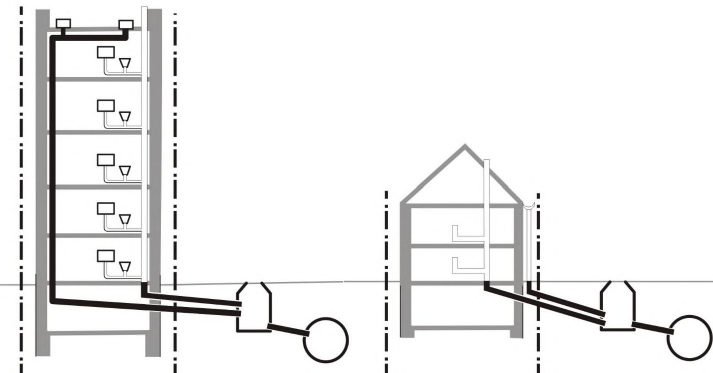
7.2Проектирование внутренних водостоков
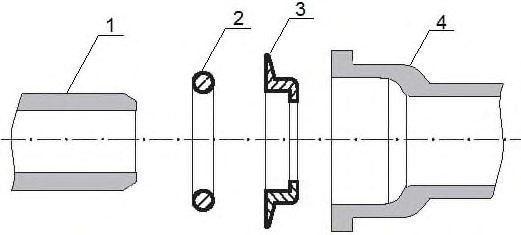
а) Элементы соединения
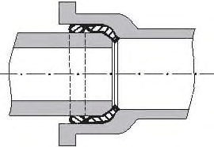
б) Соединение труб
1 - трубный конец из НПВХ; 2 - уплотнительное кольцо; 3 - переходное кольцо; 4 - чугунный раструб
Рисунок 7.2 - Соединение труб из НПВХ и чугунных труб
7.3Проектирование наружной канализации
7.4Гидравлический расчет трубопроводов из НПВХ при проектировании внутренних водостоков и наружной канализации
- минимальный расчетный расход сточных вод на начало эксплуатации сети q min, л/с;
- прогнозируемый (максимальный) расчетный расход сточных вод к окончанию проектного периода эксплуатации сети водоотведения q pr, л/с;
- длины проекций участков сети на плане 𝑙1 …𝑙𝑛 , м. В случае разветвленной сети необходимо определить основную трассу, при этом ответвления рассчитывают отдельно, а их расчетные расходы 𝑞1 …𝑞𝑛 добавляют к расходу основной трассы в соответствующих узловых точках;
- материал трубопровода с соответствующей эквивалентной ∆э шероховатостью внутренней поверхности и коэффициентом линейного расширения трубопровода, изготовленного из конкретного материала;
- динамическая вязкость η, 10 -3 Па ∙ с ;
- плотность воды ρ, кг /м³ ;
- консистенция пульпы s , доли;
- кинематическая вязкость ν , м²/с;
- отметки земли по узловым точкам сети 𝑧1 …𝑧𝑖 , м, в Балтийской системе высот;
- глубина промерзания грунтов в данном районе hпр , м.
- трубопроводы для уличной сети проектируются при DN ≥ 200;
- трубопроводы для внутриквартальной сети, сети бытовой и производственной канализации проектируются при DN ≥ 150;
- наибольшая расчетная скорость движения сточных вод 𝑣max = 8м с / ;
- расчетное наполнение трубопровода h/D определяют по таблице 7.1;
- самоочищающие скорости при расчетном наполнении труб в сети хозяйственно-бытовой канализации определяют по таблице 7.2;
- минимальные уклоны i 0 труб при расчетном наполнении определяются в соответствии с требованиями СП 32.13330 по таблице 7.3;
- диаметры трубопроводов по ходу движения потока сточной жидкости не должны уменьшаться;
- глубина заложения шелыги трубы должна быть не менее 0,7 м (для защиты труб от механических повреждений наземным транспортом).
Таблица 7.1 Максимальное наполнение труб
| DN | Максимальное наполнение труб h ⁄𝐷 |
|---|---|
| 150-300 | 0,6 |
| 350-450 | 0,7 |
| 500-900 | 0,75 |
Значения самоочищающих скоростей в сети хозяйственно-бытовой
Таблица 7.2 канализации труб
| DN | Минимальная скорость, м/с |
|---|---|
| 150-250 | 0,7 |
| 300-400 | 0,8 |
| 450-500 | 0,9 |
| 600-800 | 0,95 |
Таблица 7.3 Минимальные уклоны труб
| DN | Минимальный уклон |
|---|---|
| 150 | 0,007 |
| 200 | 0,005 |
где 𝑄п - расход при полном наполнении трубопровода, м³ /с;
здесь 𝑄t - расход при заданном наполнении, м³ /с; h/D - заданное наполнение (диапазон 0,25-0,8); 𝑝1 = 1,583 - безразмерный коэффициент; 𝑝2 = 0,18 - безразмерный коэффициент.
где 𝑘, 𝑛, 𝑚 - табличные коэффициенты;
𝐻 - вертикальный внутренний размер трубопровода, м.
Коэффициенты 𝑘, 𝑛, 𝑚 для трубопроводов круглого сечения приведены в таблице 7.4.
Таблица 7.4 Расчетные коэффициенты для трубопроводов круглого сечения
| 𝐷 , мм | k | n | m |
|---|---|---|---|
| ≤ 600 | 0,00179 | 1,92 | 5,2 |
| > 600 | 0,00214 | 1,96 | 5,2 |
Рисунок 7.3 - График зависимости уклона канализационных трубопроводов от расхода (DN трубопровода и скорости потока при полном наполнении)
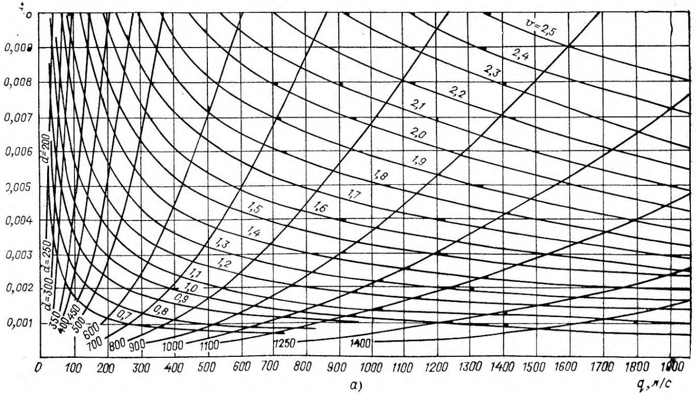
Рисунок 7.4 - График зависимости уклона канализационных трубопроводов от расхода (DN трубопровода и скорости потока при наполнениях трубопровода 0,65/0,7/0,75)
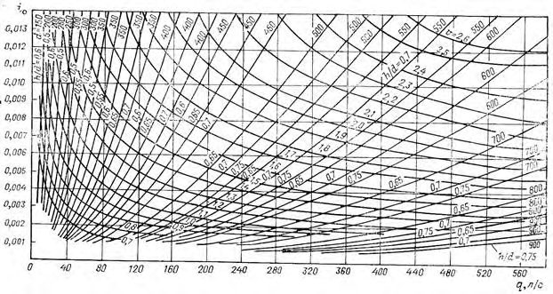
Примеры гидравлических расчетов трубопроводов из НПВХ приведены в приложении Д.
Рисунок 7.5 - Диаграмма для определения наполнения трубопровода круглого сечения
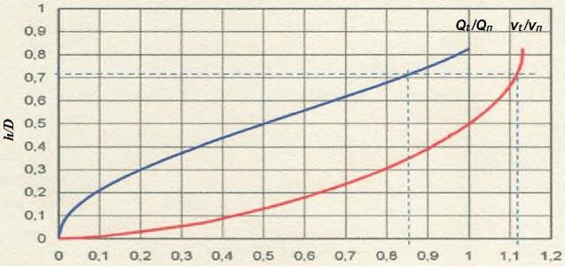
где α - наполнение; v п - скорость потока сточных вод при полном заполнении.
7.5Прочностной расчет самотечных трубопроводов из НПВХ
- на прочность;
- деформационную устойчивость;
- устойчивость.
- давление грунта;
- влияние сооружений, расположенных на поверхности вблизи трубопровода;
- транспортные нагрузки;
- влияние транспортируемых сточных вод;
- нагрузки, обусловленные собственным весом трубопровода;
- нагрузки, обусловленные воздействием грунтовых вод.
- на соблюдение геометрических размеров траншеи для прокладки трубопровода (ширина, глубина, профиль);
- крепление и демонтаж стенок траншеи;
- качество уплотнения грунта при заделке и засыпке трубопровода;
- качество устройства подстилающего слоя;
- движение транспорта на строительной площадке.
8Правила монтажа трубопроводов самотечных систем водоотведения из труб НПВХ
8.1Общие положения
- устройство траншеи;
- устройство подстилающего слоя;
- опускание труб в траншею;
- соединение труб вдоль оси трассы;
- подбивка пазух и устройство наружного подстилающего слоя;
- послойная засыпка бокового пространства, защитного слоя;
- обратная засыпка траншеи.
8.2Правила устройства траншей при строительстве трубопроводов
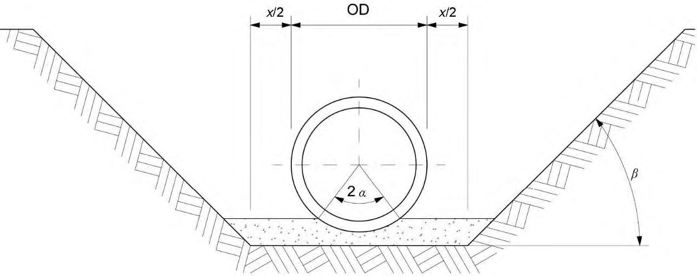
Рисунок 8.1 - Угол наклона стенки траншеи и ширина рабочего пространства
Таблица 8.1 Минимальная ширина траншеи в зависимости от условного диаметра трубопровода
| Минимальная ширина траншеи ( B = d n + x ), м | Минимальная ширина траншеи ( B = d n + x ), м | Минимальная ширина траншеи ( B = d n + x ), м | |
|---|---|---|---|
| Д у , мм | Траншея с крепью | Траншея без крепи | Траншея без крепи |
| Траншея с крепью | β > 60º | β ≤ 60º | |
| ≤ 225 | d n + 0,40 | d n + 0,40 | d n + 0,40 |
| 225 < Д у ≤ 350 | d n + 0,50 | d n + 0,50 | d n + 0,40 |
| 350 < Д у ≤ 700 | d n + 0,70 | d n + 0,70 | d n + 0,40 |
| 700 < Д у ≤ 1200 | d n + 0,85 | d n + 0,85 | d n + 0,40 |
| > 1200 | d n + 1,00 | d n + 1,00 | d n + 0,40 |
Примечание - В настоящей таблице применены следующие условные обозначения: x/ 2 - минимально допустимое расстояние между трубопроводом и стенкой траншеи, м; d n - номинальный наружный диаметр трубы, м; β - угол наклона стенки траншеи относительно горизонтальной плоскости.
Таблица 8.2 -
Минимальная ширина траншеи в зависимости от ее глубины
В метрах
| Глубина траншеи Н тр | Минимальная ширина траншеи B min |
|---|---|
| ≤ 1,00 | - |
| 1,00 < Н тр ≤ 1,75 | 0,80 |
| 1,75 < Н тр ≤ 4,00 | 0,90 |
| > 4,00 | 1,00 |
Таблица 8.3 Минимальное расстояние между трубами, расположенными на одном уровне траншеи
| Диаметр трубопровода, мм | Минимальное расстояние между трубами, м |
|---|---|
| ≤ 700 | 0,40 |
| >700 | 0,40 |
- при строительстве трубопровода на специфических грунтах;
- изменении свойств грунта по всей трассе, при которых следует ожидать различной осадки;
- сильном влиянии на механические свойства грунта атмосферных осадков.
- слоя песчано-гравийной смеси;
- щебеночного слоя;
- бетонного основания.
8.3Заделка трубопровода в траншее
- диаметра трубопровода;
- материала трубопровода и толщины стенки трубы;
- свойств местного грунта.
Таблица 8.4 Требования к уплотнению заделки и характеристики используемого оборудования
| Группы грунтов | Группы грунтов | Грунты групп 1 и 2 (таблица Е.1) | Грунты групп 1 и 2 (таблица Е.1) | Грунты групп 1 и 2 (таблица Е.1) |
|---|---|---|---|---|
| Коэффициент уплотнения грунта (ГОСТ 22733) | Коэффициент уплотнения грунта (ГОСТ 22733) | 97% | 97% | 97% |
| Агрегаты для уплотнения грунта | Масса в рабочем состоянии, кг | Пригодность | Толщина уплотня- емого слоя, см | Число проходов |
| Вибрационная трамбовка: | ||||
| - легкая | До 30 | + | До 20 | 2-4 |
| - средняя | 30-60 | ○ | 20-40 | 2-4 |
| - тяжелая | 60-100 | ○ | 30-50 | 2-4 |
СП 503.1325800.2021
Окончание таблицы 8.4
| Группы грунтов | Группы грунтов | Грунты групп 1 и 2 (таблица Е.1) | Грунты групп 1 и 2 (таблица Е.1) | Грунты групп 1 и 2 (таблица Е.1) |
|---|---|---|---|---|
| Коэффициент уплотнения грунта (ГОСТ 22733) | Коэффициент уплотнения грунта (ГОСТ 22733) | 97% | 97% | 97% |
| Агрегаты для уплотнения грунта | Масса в рабочем состоянии, кг | Пригодность | Толщина уплотня- емого слоя, см | Число проходов |
| Трамбовка взрывного дей- ствия, средняя | До 100 | ○ | 20-40 | 3-4 |
| Плоский вибратор: | ||||
| - легкий | До 100 | + | До 20 | 3-5 |
| - средний | 100-300 | ○ | 20-30 | 3-5 |
Примечание - В настоящей таблице применены следующие условные обозначения: «+» - рекомендуется;
«○» - подходит в большинстве случаев, но каждый конкретный случай необходимо согласовывать.
- его характеристики соответствует требованиям проекта;
- его можно уплотнять;
- в нем отсутствуют материалы, способные повредить трубопровод (грубые фракции, корни деревьев, мусор, органические вещества, комки глины более 75 мм, снег и лед).
Таблица 8.5 -
Максимально допустимый размер частиц грунта для подстилающего слоя В миллиметрах
| Номинальный внутренний диаметр трубопровода DN | Максимально допустимый размер частиц для подстилающего слоя |
|---|---|
| ≤ 200 | 22 |
| 200-600 | 40 |
| > 600 | 60 |
8.4Устройство подстилающего слоя
- а) Правильное устройство подстилающего слоя:
- б) Неправильное устройство подстилающего слоя:
- коэффициент уплотнения подстилающих слоев больше коэффициента уплотнения основания траншеи;
- наружный и внутренний подстилающие слои равномерно уплотнены
- коэффициент уплотнения нижнего подстилающего слоя и основания траншеи больше коэффициента уплотнения верхнего подстилающего слоя;
- некачественное уплотнение наружного подстилающего слоя
2α - опорный угол
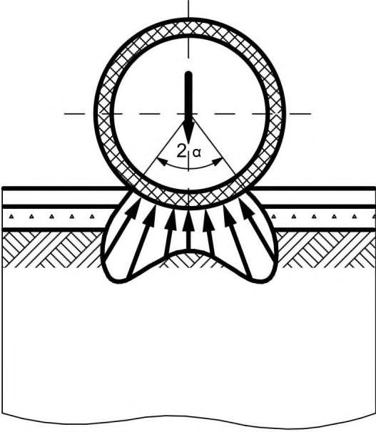
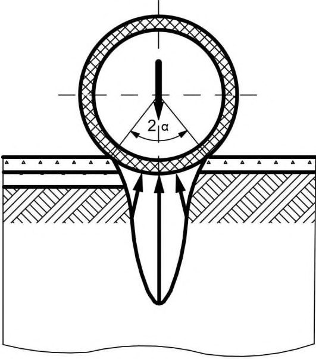
Рисунок 8.2 - Распределение напряжений в подстилающем слое
Рисунок 8.3 - Устройство приямков под раструбы при монтаже трубопровода
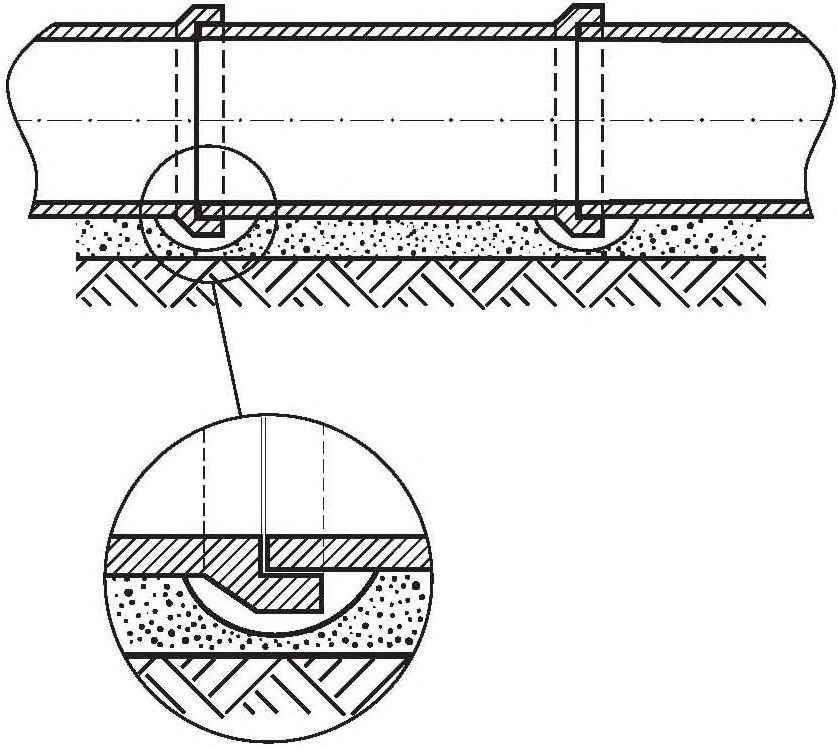
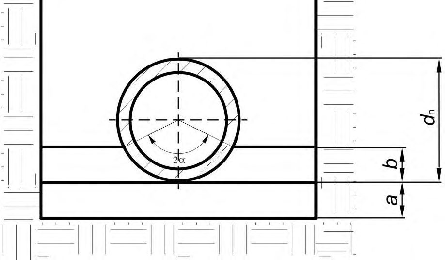
а - нижний подстилающий слой; b - верхний подстилающий слой; d n - наружный диаметр трубы; 2α - опорный угол
Рисунок 8.4 - Подстилающий слой 1-го типа
100 - для нормальных грунтов;
150 - при глинистых грунтах и монолитных основаниях.
где d n - наружный диаметр трубы;
2α - опорный угол.
где d n - наружный диаметр трубы.
где d n - наружный диаметр трубы.
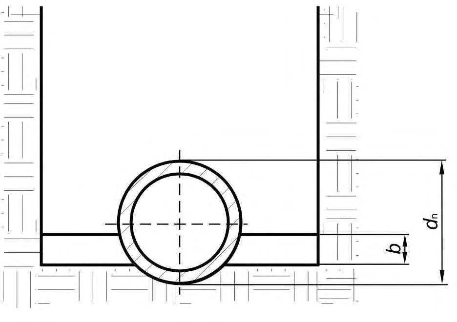
Рисунок 8.5 - Подстилающий слой 2-го типа
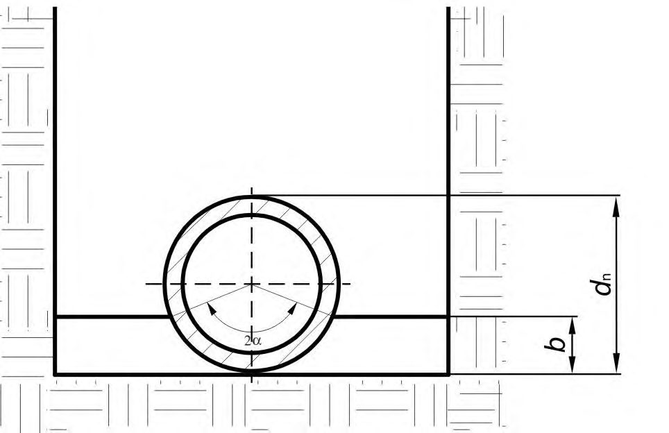
Рисунок 8.6 - Подстилающий слой 3-го типа
- при наличии на трассе трубопровода разнородных грунтов;
- изменяющемся уровне грунтовых вод;
- сильном уклоне основания траншеи;
- прокладке в скальных породах.
- устройство нижнего слоя бетона толщиной
где a σ = 50 мм + 0,1 d n, при этом значение a σ не должно быть менее 100 мм; здесь d n - наружный диаметр трубы; d з.max - диаметр наибольшего зерна заполнителя бетона;
- укладку труб на деревянные, обильно смоченные водой планки;
- устройство верхнего подстилающего слоя из бетона, обладающего минимальной пластичностью, толщиной
где b σ - толщина верхнего подстилающего слоя; d з.max - диаметр наибольшего зерна заполнителя бетона. а - нижний подстилающий слой; b - верхний подстилающий слой; 2α - опорный угол
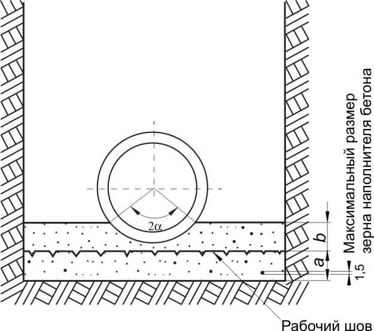
Рисунок 8.7 - Бетонный подстилающий слой
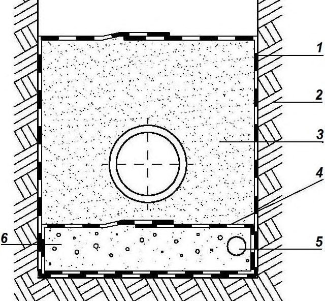
1 - геотекстиль для стабилизации траншеи; 2 - местный грунт; 3 песок; 4 - геотекстиль для стабилизации подстилающего слоя; 5 - дренажная труба; 6 подстилающий слой
Рисунок 8.8 - Устройство заделки трубопровода с использование геотекстиля
- плотность - не менее 150 г/м² ;
- коэффициент фильтрации - 140-125 м/сут;
- продольная разрывная нагрузка - 1,9-3,0 кН/м;
- поперечная разрывная нагрузка - 1,5-2,4 кН/м;
- прочность на продавливание - 400-500 Н.
8.5Транспортирование и хранение труб и фасонных частей
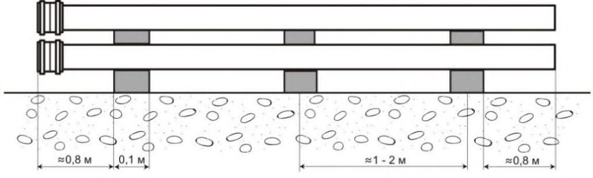
Рисунок 8.9 - Хранение труб в штабелях
8.6Прокладка трубопровода
Таблица 8.6 -
Допустимые радиусы изгиба труб из НПВХ В миллиметрах
| Наружный диаметр трубопровода d n | Допустимый радиус изгиба трубопровода R |
|---|---|
| d n ≤ 200 | ≥ 300 d n |
| d n > 200 | ≥ 500 d n |
Таблица 8.7 Максимально допустимые изменения направления оси трубопровода при раструбном соединении
| Наружный диаметр трубопровода d n , мм | Максимально допустимые изменения направления оси трубопровода |
|---|---|
| d n ≤ 315 | 2° |
| 315 < d n ≤ 630 | 1,5° |
| d n > 630 | 1° |
Рисунок 8.10 - Устройство раструбных соединений
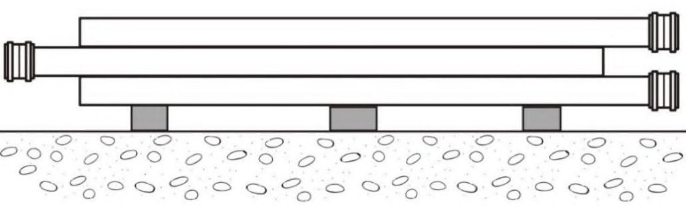
Рисунок 8.11 - Устройство для соединения труб из НПВХ большого диаметра
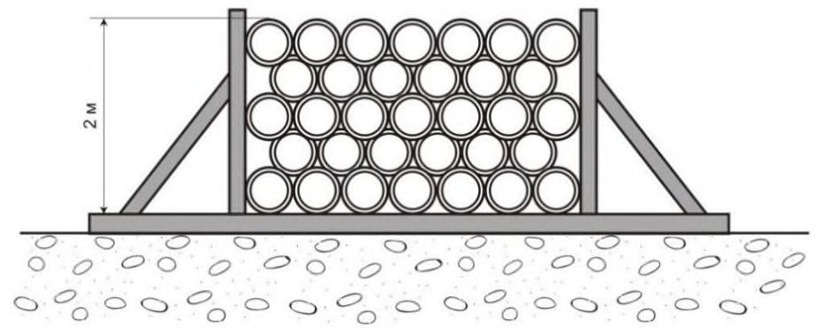
- удалить с краев труб заусенцы, снять фаски;
- очистить склеиваемые поверхности трубы и соединительной муфты от грязи и пыли, обезжирить очищенные поверхности;
- нанести клей на очищенные поверхности;
- надвинуть приклеиваемую муфту на конец первой трубы до упора;
- вставить вторую трубу в муфту до упора;
- удалить излишки клея.
Примечание - Клей наносят на всю глубину раструба и длину трубы до заранее нанесенной отметки.
- выполнить разметку посадочного места на существующем трубопроводе (либо с помощью шаблона, либо с использованием седлового отвода);
- вырезать отверстие в существующем трубопроводе;
- очистить и обезжирить места приклеивания на трубопроводе и седловом отводе;
- нанести клей на склеиваемые поверхности;
- установить седловой отвод через 1 мин после нанесения клея;
- прижать отвод к трубе хомутами.
- несущая способность трубопровода не должна ухудшаться;
- примыкающая труба не должна выступать внутри трубопровода или колодца;
- примыкание должно быть герметичным.
Рисунок 8.12 - Бетонные упоры для компенсации нагрузок на раструбные соединения при большом уклоне трубопровода
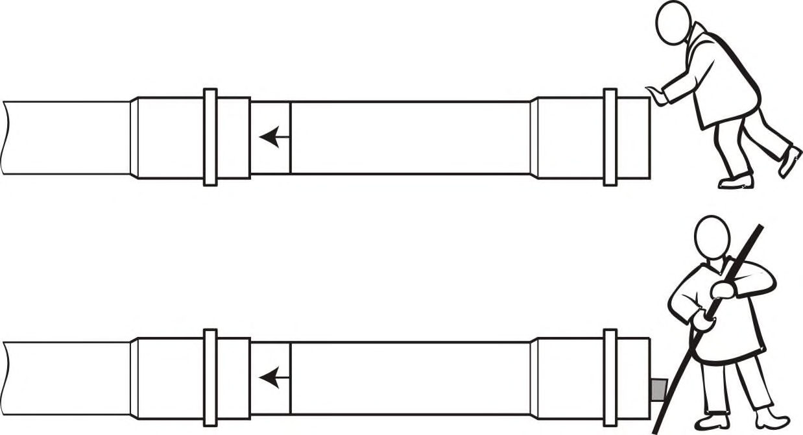
- монтаж тройника с использованием сдвижных муфт;
- монтаж седлового отвода с механическим креплением;
- приклеивание седлового отвода.
где l - эффективная длина тройника; d n - наружный диаметр трубопровода.
Рисунок 8.13 - Крепление тройника универсальной муфтой
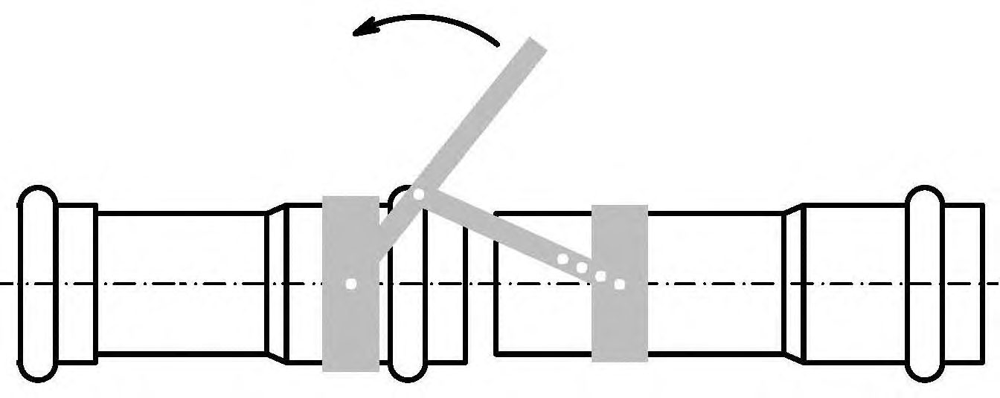
Рисунок 8.14 - Врезка тройника с креплением надвижными муфтами
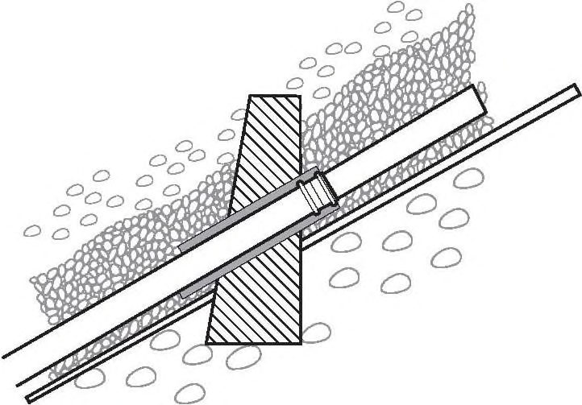
1 - фасонная часть; 2 - уплотнительное кольцо; 3 - герметизирующая вставка; 4 - труба
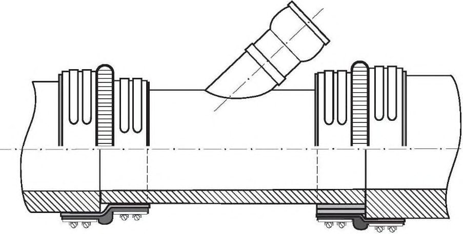
Рисунок 8.15 - Седловой отвод с механическим креплением
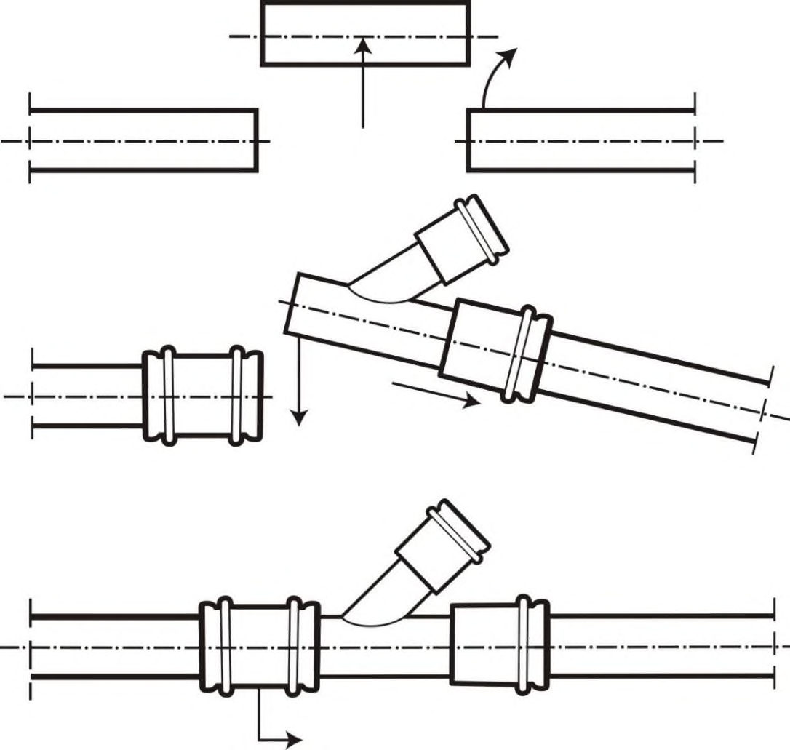
1 - вставка для крепления трубопровода; 2 - короткие трубы
Рисунок 8.16 - Устройство примыкания к бетонному колодцу трубопровода из НПВХ с использованием коротких труб
- переходов;
- уплотнительных колец;
- универсальных муфт.
1 - трубный конец из НПВХ; 2 - прокладка из ЭПДК; 3 - бетонный/керамический раструб
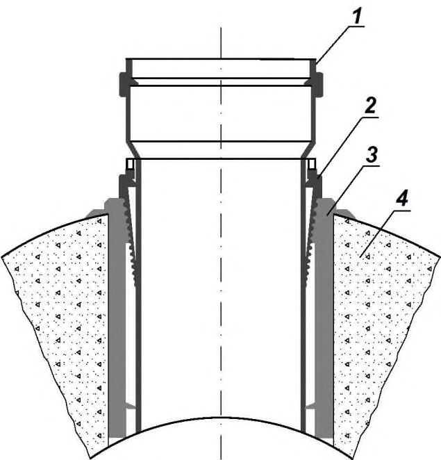
Рисунок 8.17 - Устройство соединения трубного конца из НПВХ с керамическим раструбом
- для ремонта поврежденных трубопроводов;
- соединения трубопроводов из различных материалов и с различными диаметрами и формой сечения;
- соединения укороченных труб;
- устройства врезок в действующие трубопроводы.
Таблица 8.8 Размеры универсальных муфт типа 1
| Номиналь- ный диаметр муфты d 3 | Ширина манжеты | Толщина под стяжной лентой | Ширина участка для защитного кожуха | Толщина за- щитного ко- жуха | Ширина стяжной ленты | Толщина стяжной ленты |
|---|---|---|---|---|---|---|
| Менее 400 | 102 | 3,0 | 32 | 0,4 | 12 | 0,6 |
| 400-1000 | 160 | 3,5 | 32 | 0,5 | 12 | 0,6 |
В миллиметрах
1 - труба 1; 2 - стяжная лента; 3 - манжета; 4 - труба 2; d 3 - номинальный диаметр; l m - длина манжеты
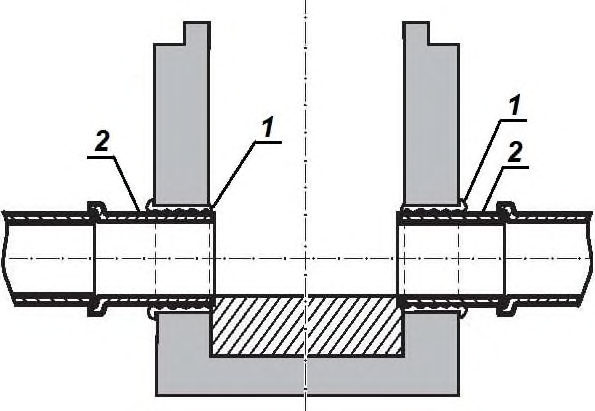
Рисунок 8.18 - Соединение труб с использованием универсальной муфты типа 1
Таблица 8.9 Размеры универсальных муфт типа 2
1 - труба 1; 2 - стяжная лента; 3 - защитное кольцо; 4 - труба 2; 5 - манжета ; d 3 - номинальный диаметр; l m - длина манжеты
| Номинальный диаметр муфты d 3 | Ширина манжеты | Толщина под стяж- ной лентой | Ширина участка для защитного кожуха | Толщина защитного кожуха | Ширина стяжной ленты | Толщина стяжной ленты |
|---|---|---|---|---|---|---|
| Менее 200 | 120 | 7,0 | 54 | 0,35 | 12 | 0,6 |
| 200-300 | 150 | 7,5 | 78 | 0,35 | 12 | 0,6 |
| Свыше 300 | 185 | 9,0 | 97 | 0,75 | 12 | 0,6 |
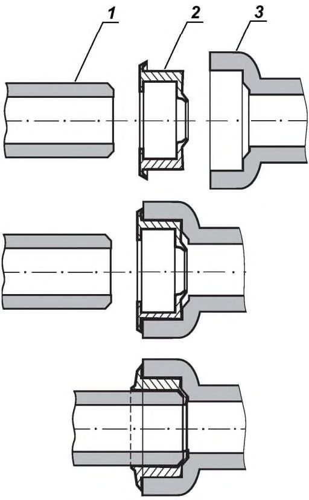
Рисунок 8.19 - Соединение труб с использованием универсальной муфты типа 2
В миллиметрах
1 - труба 1; 2 - адаптер; 3 - универсальная муфта с пружинным каркасом; 4 - труба 2
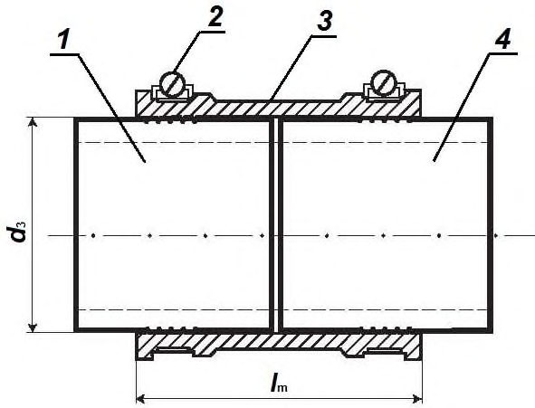
Рисунок 8.20 - Универсальная муфта с пружинным каркасом
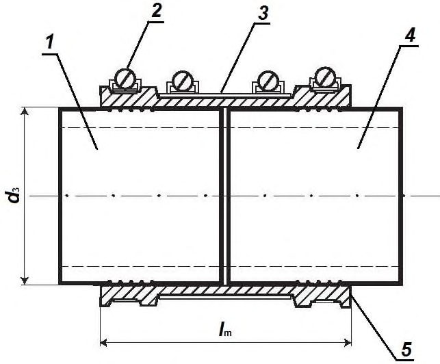
1 - труба 1; 2 - стяжная лента; 3 - труба 2; 4 - манжета; d 3а - номинальный диаметр трубы 1; d 3b - номинальный диаметр трубы 2; l m - длина манжеты
Рисунок 8.21 - Универсальная муфта без пружинного каркаса
Таблица 8.10 -
Размеры универсальных муфт без пружинного каркаса В миллиметрах
| Номинальный диаметр муфты d 3а | Номинальный диаметр муфты d 3b | Ширина манжеты |
|---|---|---|
| 110-510 | 75-410 | 120-180 |
8.7Обратная засыпка траншеи
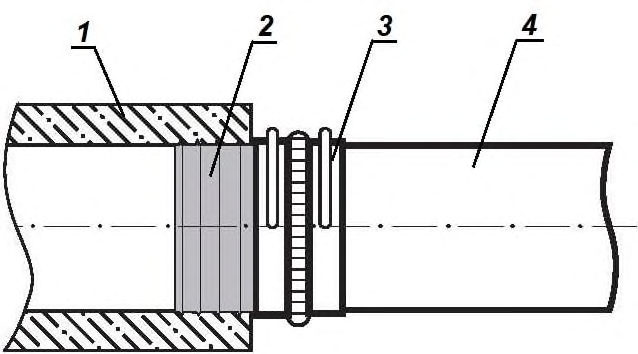
1 - нижний подстилающий слой ( h 1); 2 - верхний подстилающий слой ( h 2); 3 - заделы боковых пазух ( h 3); 4 - защитный слой ( h 4); 5 - часть защитного слоя, трамбуемая вручную; 6 - основной слой засыпки ( h 5)
Рисунок 8.22 - Схема засыпки траншеи с расположением слоев
Таблица 8.11 Уплотнение грунта при заделке трубопровода и засыпке траншеи
| Группы грунтов по приложению Е | Группы грунтов по приложению Е | 1 | 1 | 1 | 2 | 2 | 2 | 3 и 4 | 3 и 4 | 3 и 4 |
|---|---|---|---|---|---|---|---|---|---|---|
| Устройство заделки трубопровода (боковые пазухи, защитный слой) | Устройство заделки трубопровода (боковые пазухи, защитный слой) | Устройство заделки трубопровода (боковые пазухи, защитный слой) | Устройство заделки трубопровода (боковые пазухи, защитный слой) | Устройство заделки трубопровода (боковые пазухи, защитный слой) | Устройство заделки трубопровода (боковые пазухи, защитный слой) | Устройство заделки трубопровода (боковые пазухи, защитный слой) | Устройство заделки трубопровода (боковые пазухи, защитный слой) | Устройство заделки трубопровода (боковые пазухи, защитный слой) | Устройство заделки трубопровода (боковые пазухи, защитный слой) | Устройство заделки трубопровода (боковые пазухи, защитный слой) |
| Коэффициент уплотнения грунта | Коэффициент уплотнения грунта | 97% | 97% | 97% | 97% | 97% | 97% | - | - | - |
| Агрегаты для уплотне- ния грунта | Масса в рабо- чем состоя- нии, кг | Пригодность | Толщина уплотняемого слоя, см | Число проходов | Пригодность | Толщина уплотняемого слоя, см | Число проходов | Пригодность | Толщина уплотняемого слоя, см | Число проходов |
| Уплотнение заделки трубопровода | Уплотнение заделки трубопровода | Уплотнение заделки трубопровода | Уплотнение заделки трубопровода | Уплотнение заделки трубопровода | Уплотнение заделки трубопровода | Уплотнение заделки трубопровода | Уплотнение заделки трубопровода | Уплотнение заделки трубопровода | Уплотнение заделки трубопровода | Уплотнение заделки трубопровода |
| Вибрационная трамбовка: | Вибрационная трамбовка: | Вибрационная трамбовка: | Вибрационная трамбовка: | Вибрационная трамбовка: | Вибрационная трамбовка: | Вибрационная трамбовка: | Вибрационная трамбовка: | Вибрационная трамбовка: | Вибрационная трамбовка: | Вибрационная трамбовка: |
| - легкая | До 30 | + | До 20 | 2-4 | + | До 20 | 2-4 | - | - | - |
| - средняя | 30-60 | ○ | 20-40 | 2-4 | ○ | 20-30 | 3-4 | - | - | - |
| - тяжелая | 60-100 | ○ | 30-50 | 2-4 | ○ | 20-40 | 3-4 | - | - | - |
| Трамбовка взрывного действия, средняя | До 100 | ○ | 20-40 | 3-4 | ○ | 20-40 | 3-4 | - | - | - |
| Плоский вибратор: | Плоский вибратор: | Плоский вибратор: | Плоский вибратор: | Плоский вибратор: | Плоский вибратор: | Плоский вибратор: | Плоский вибратор: | Плоский вибратор: | Плоский вибратор: | Плоский вибратор: |
| - легкий | До 100 | + | до 20 | 3-5 | + | До 15 | 4-6 | - | - | - |
| - средний | 100-300 | ○ | 20-30 | 3-5 | ○ | 15-25 | 4-6 | - | - | - |
| Уплотнение засыпки траншеи | Уплотнение засыпки траншеи | Уплотнение засыпки траншеи | Уплотнение засыпки траншеи | Уплотнение засыпки траншеи | Уплотнение засыпки траншеи | Уплотнение засыпки траншеи | Уплотнение засыпки траншеи | Уплотнение засыпки траншеи | Уплотнение засыпки траншеи | Уплотнение засыпки траншеи |
| Коэффициент уплотнения грунта | Коэффициент уплотнения грунта | 98% | 98% | 98% | 97% | 97% | 97% | 95% | 95% | 95% |
| Уплотнение слоев грунта, расположенных на 1 м выше заделки трубопровода | Уплотнение слоев грунта, расположенных на 1 м выше заделки трубопровода | Уплотнение слоев грунта, расположенных на 1 м выше заделки трубопровода | Уплотнение слоев грунта, расположенных на 1 м выше заделки трубопровода | Уплотнение слоев грунта, расположенных на 1 м выше заделки трубопровода | Уплотнение слоев грунта, расположенных на 1 м выше заделки трубопровода | Уплотнение слоев грунта, расположенных на 1 м выше заделки трубопровода | Уплотнение слоев грунта, расположенных на 1 м выше заделки трубопровода | Уплотнение слоев грунта, расположенных на 1 м выше заделки трубопровода | Уплотнение слоев грунта, расположенных на 1 м выше заделки трубопровода | Уплотнение слоев грунта, расположенных на 1 м выше заделки трубопровода |
| Вибрационная трамбовка: | Вибрационная трамбовка: | Вибрационная трамбовка: | Вибрационная трамбовка: | Вибрационная трамбовка: | Вибрационная трамбовка: | Вибрационная трамбовка: | Вибрационная трамбовка: | Вибрационная трамбовка: | Вибрационная трамбовка: | Вибрационная трамбовка: |
| - средняя | 30-60 | + | 20-40 | 2-4 | + | 20-30 | 2-4 | ○ | 10-30 | 2-4 |
| - тяжелая | 60-100 | + | 30-50 | 2-4 | + | 20-40 | 2-4 | ○ | 20-30 | 2-4 |
| Трамбовка взрывного действия, средняя | До 100 | ○ | 20-40 | 3-4 | ○ | 20-40 | 3-4 | ○ | 20-30 | 3-5 |
Окончание таблицы 8.11
| Группы грунтов по приложению Е | Группы грунтов по приложению Е | 1 | 1 | 1 | 2 | 2 | 2 | 3 и 4 | 3 и 4 | 3 и 4 |
|---|---|---|---|---|---|---|---|---|---|---|
| Устройство заделки трубопровода (боковые пазухи, защитный слой) | Устройство заделки трубопровода (боковые пазухи, защитный слой) | Устройство заделки трубопровода (боковые пазухи, защитный слой) | Устройство заделки трубопровода (боковые пазухи, защитный слой) | Устройство заделки трубопровода (боковые пазухи, защитный слой) | Устройство заделки трубопровода (боковые пазухи, защитный слой) | Устройство заделки трубопровода (боковые пазухи, защитный слой) | Устройство заделки трубопровода (боковые пазухи, защитный слой) | Устройство заделки трубопровода (боковые пазухи, защитный слой) | Устройство заделки трубопровода (боковые пазухи, защитный слой) | Устройство заделки трубопровода (боковые пазухи, защитный слой) |
| Коэффициент уплотнения грунта | Коэффициент уплотнения грунта | 97% | 97% | 97% | 97% | 97% | 97% | - | - | - |
| Агрегаты для уплотне- ния грунта | Масса в рабо- чем состоя- нии, кг | Пригодность | Толщина уплотняемого слоя, см | Число проходов | Пригодность | Толщина уплотняемого слоя, см | Число проходов | Пригодность | Толщина уплотняемого слоя, см | Число проходов |
| Плоский вибратор | Плоский вибратор | Плоский вибратор | Плоский вибратор | Плоский вибратор | Плоский вибратор | Плоский вибратор | Плоский вибратор | Плоский вибратор | Плоский вибратор | Плоский вибратор |
| - средний | 100-300 | + | 20-40 | 3-5 | ○ | 20-40 | 3-5 | - | - | - |
| - тяжелый | 300-750 | + | 30-60 | 3-5 | ○ | 30-50 | 3-5 | - | - | - |
| Виброкаток: | Виброкаток: | Виброкаток: | Виброкаток: | Виброкаток: | Виброкаток: | Виброкаток: | Виброкаток: | Виброкаток: | Виброкаток: | Виброкаток: |
| - тяжелый | 600-8000 | + | 30-80 | 4-6 | + | 30-60 | 4-6 | ○ | 30-60 | 4-6 |
| Уплотнение слоя грунта под проезжей частью (толщина 0,5 м) | Уплотнение слоя грунта под проезжей частью (толщина 0,5 м) | Уплотнение слоя грунта под проезжей частью (толщина 0,5 м) | Уплотнение слоя грунта под проезжей частью (толщина 0,5 м) | Уплотнение слоя грунта под проезжей частью (толщина 0,5 м) | Уплотнение слоя грунта под проезжей частью (толщина 0,5 м) | Уплотнение слоя грунта под проезжей частью (толщина 0,5 м) | Уплотнение слоя грунта под проезжей частью (толщина 0,5 м) | Уплотнение слоя грунта под проезжей частью (толщина 0,5 м) | Уплотнение слоя грунта под проезжей частью (толщина 0,5 м) | Уплотнение слоя грунта под проезжей частью (толщина 0,5 м) |
| Коэффициент уплотнения грунта | Коэффициент уплотнения грунта | 100% | 100% | 100% | 100% | 100% | 100% | 97% | 97% | 97% |
9Испытания и сдача трубопроводов в эксплуатацию
Испытания и сдачу трубопроводов в эксплуатацию проводят согласно СП 399.1325800.
10Контроль качества при производстве работ
- всех элементов строительной конструкции, расходных материалов и подручных средств на соответствие требованиям договора строительного подряда;
- труб и фасонных частей на наличие повреждений;
- работоспособности агрегатов и приборов для монтажа трубопроводов и подручных средств;
- направления, глубины прокладки и уклона труб и фасонных частей;
- качества устройства соединений;
- качества устройства примыканий к канализационным колодцам, зданиям и сооружениям.
- подтверждение несущей способности траншеи;
- отсутствие воды на дне траншеи;
- наличие крепления стенок траншеи;
- достаточность рабочего пространства;
- определение влажности грунта, используемого при обратной засыпке траншеи;
- подтверждение качества уплотнения приямков и пазух;
- подтверждение толщины слоев при обратной засыпке траншеи.
11Общие требования безопасности и охраны окружающей среды при производстве монтажных работ
- ненадлежащее крепление труб, фасонных частей и пневматических заглушек при испытании трубопровода на герметичность;
- отсутствие крепления стенок траншеи (если крепление предусмотрено проектом);
- наличие строительной техники и инженерных коммуникаций (электропроводка) на строительной площадке;
- наличие на строительной площадке грузового транспорта;
- использование при монтаже электроинструмента;
- шумовые воздействия;
- использование материалов, представляющих опасность для здоровья;
- наличие зараженных грунтовых вод и зараженного грунта;
- движущиеся машины и их рабочие органы, а также передвигаемые ими предметы;
- расположение рабочего места вблизи перепада по высоте 1,3 м и более;
- наличие на строительной площадке химически опасных веществ.
- работы следует организовать таким образом, чтобы по возможности избежать возникновения опасности для жизни и здоровья рабочих;
- в первую очередь следует обращать внимание на технические и организационные мероприятия, направленные на ликвидацию источников опасности;
- при организации работ следует использовать современные достижения строительных технологий, медицины и гигиены.
- соблюдением безопасной крутизны незакрепленных откосов траншей с учетом нагрузки от машин и грунта;
- дополнительными мероприятиями по контролю и обеспечению устойчивости откосов в связи с сезонными изменениями;
- определением мест установки и типов ограждений котлованов и траншей, а также лестниц для спуска работников к месту работ.
12Правила эксплуатации трубопроводов из НПВХ
- непрерывное водоотведение плановых объемов сточных вод;
- надежную, экологически безопасную и экономически эффективную эксплуатацию сетей;
- герметичность.
- засорами;
- появлением на стенках жировых, минеральных и прочих отложений;
- прорастанием корневых систем растений.
- водной струйной очисткой под высоким давлением (120 атм, диаметр струи 2,8 мм);
- с использованием роботизированных устройств;
- вручную.
- трещины;
- повреждения труб, обусловленные воздействием химически активных веществ;
- размывание грунта рядом с трубопроводом;
- повреждение примыканий;
- деформации труб;
- смещение или повреждение раструбных соединений.
- инъецирование;
- использование роботизированных устройств;
- установку герметизирующих манжет;
- монтаж коротких полимерных рукавов;
- восстановление поврежденного интервала с использованием гибких полимерных рукавов.
Приложение А
Трубы и фасонные части со структурированной стенкой
Рисунок А.1 - Конструкция стенок труб и фасонных частей типа А
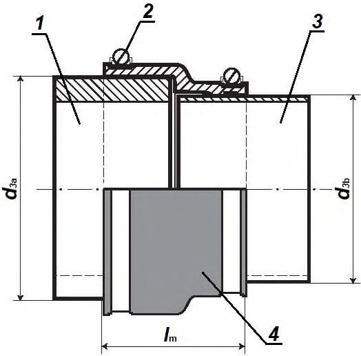
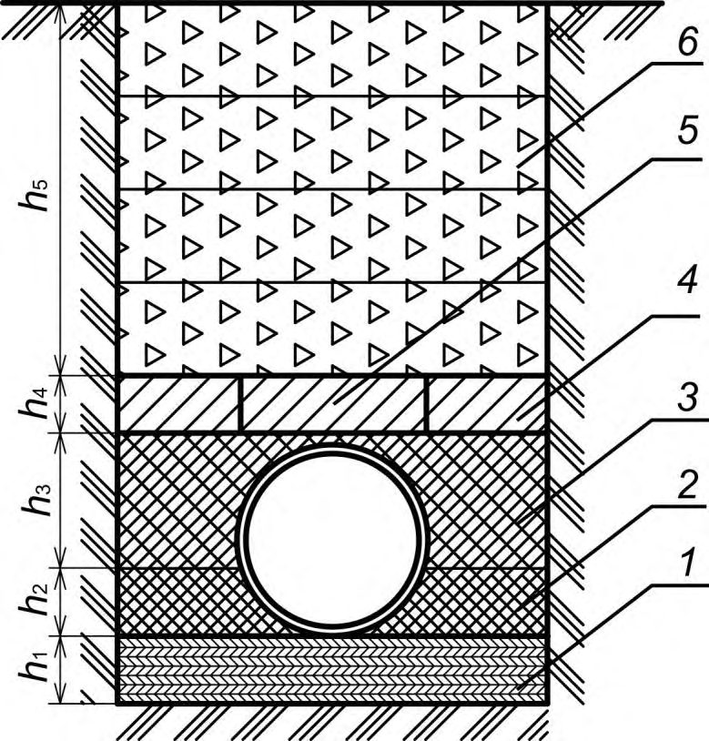
L - эффективная длина трубы; A - длина контакта; C - глубина точки эффективного уплотнения; e 2 - толщина стенки цилиндрической части раструба; e 3 - толщина стенки канавки под уплотнительное кольцо; d s - внутренний диаметр раструба
Рисунок А.2 - Типовые соединения труб со структурированной стенкой типа А
Рисунок А.3 - Типичные конструкции стенок труб типа В
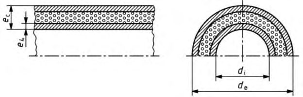
Рисунок А.4 - Типовые способы соединения труб типа В
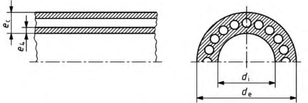
БПриложение Б. Типы фасонных частей
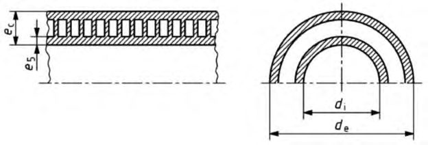
α -номинальный угол; Z 1, Z 2 -конструктивные длины; d n - номинальный наружный диаметр; l - эффективная длина фасонной части
Примечание - Рекомендуемые значения номинального угла α: 15°, 30°, 45°, 67°30 , 87°30 -90°.
Рисунок Б.1 - Отвод раструб - трубный гладкий конец с номинальным углом α
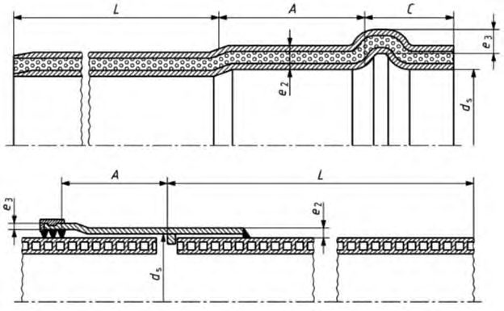
α -номинальный угол; Z 1, Z 2 -конструктивные длины; d s - внутренний диаметр раструба; l - эффективная длина фасонной части
Примечание - Рекомендуемые значения номинального угла α: 15°, 30°, 45°, 67°30 , 87°30 -90°.
Рисунок Б.2 - Отвод раструбный с номинальным углом α
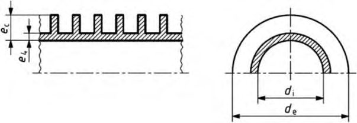
Z 1, Z 2 -конструктивные длины; d s - внутренний диаметр раструба; R - радиус кривизны оси фасонной части; l - эффективная длина фасонной части
Рисунок Б.3 - Отвод раструб - трубный гладкий конец с номинальным углом α: 87°30 -90°
Z 1, Z 2 -конструктивные длины; d s - внутренний диаметр раструба; R - радиус кривизны оси фасонной части; l -эффективная длина фасонной части
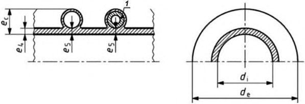
Рисунок Б.4 - Отвод раструб - раструб с номинальным углом α: 87°30 -90°
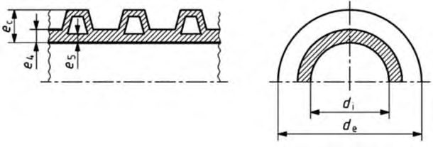
X - толщина разделительной перемычки; L - длина муфты
Рисунок Б.5 - Двухраструбная муфта
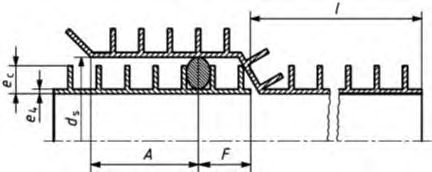
Рисунок Б.6 -Надвижная муфта
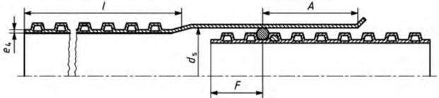
D - наружный диаметр муфты; L - длина муфты; L 2 - длина раструба; L m - длина шаровой муфты
Рисунок Б.7 - Угловая ( а ) и шаровая ( б ) муфты для устройства примыканий к колодцам
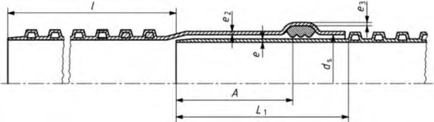
X - толщина разделительной перемычки; L - длина муфты
Рисунок Б.8 - Муфта для устройства примыканий к ограждающим конструкциям
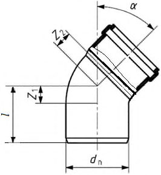
L - длина муфты; L 2 - длина раструба; L m - длина шаровой муфты; А минимальная длина контакта; D - наружный диаметр муфты
Рисунок Б.9 - Муфта для устройства врезок в трубопроводы
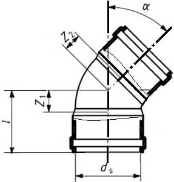
d n - внешний диаметр перехода; d s - внутренний диаметр раструба; L - длина перехода; L 1 - длина раструба
Рисунок Б.10 - Переход для соединения с трубопроводами из керамических труб
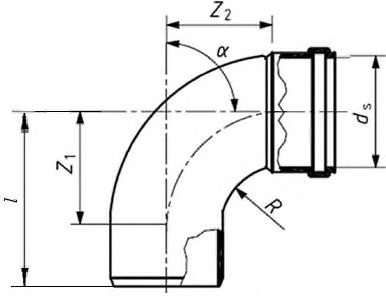
d n1 - номинальный диаметр; d n2 - номинальный диаметр; Z 1 - конструктивная длина
Рисунок Б.11 - Переходной патрубок
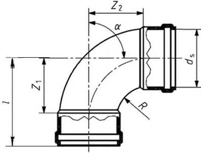
Рисунок Б.12 - Вставка для устройства примыканий к ограждающим конструкциям
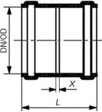
Z 1, Z 2 -конструктивные длины; d s - внутренний диаметр раструба; d n - номинальный диаметр; α - номинальный угол
Рисунок Б.13 - Тройник раструб - трубный гладкий конец с номинальным углом α
Z 1, Z 2 -конструктивные длины; α -номинальный угол; s - внутренний диаметр раструба
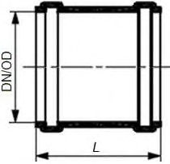
Рисунок Б.14 d - Раструбный тройник с номинальным углом α
Z , Z 1, Z 2, Z 3 -конструктивные длины; α -номинальный угол; d s1 - внутренний диаметр раструба 1; d s2 - внутренний диаметр раструба 2; R - радиус кривизны оси фасонной части
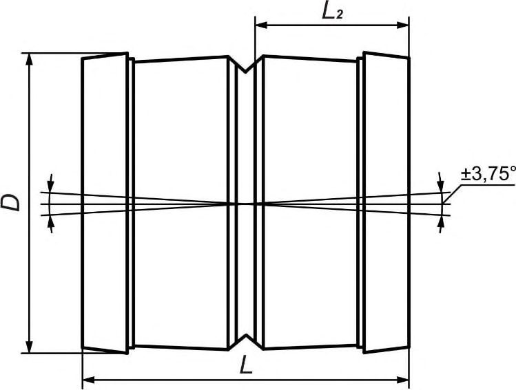
Рисунок Б.15 - Тройник раструб - трубный гладкий конец с номинальным углом α: 87°30 -90°
Z , Z 1, Z 2, Z 3 -конструктивные длины; α -номинальный угол; d s1 - внутренний диаметр раструба 1; d s2 - внутренний диаметр раструба 2; R - радиус кривизны оси фасонной части
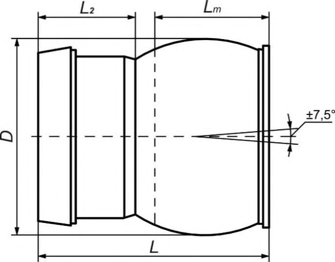
Рисунок Б.16 - Раструбный тройник с номинальным углом α: 87°30 -90°
α -номинальный угол; d s2 - внутренний диаметр раструба 2; Z 2 -конструктивная длина; d n1 - номинальный диаметр; L - продольный размер участка приклеивания седелки; a - поперечный размер участков приклеивания седелки
Рисунок Б.17 - Седловые отводы
M - высота заглушки; d n - номинальный диаметр
Рисунок Б.18 - Заглушка
Рисунок Б.19 - Ревизия с круглой ( а ) и прижимной ( б ) крышками
ВПриложение В. Фасонные части со структурированной стенкой
α -номинальный угол; Z 1, Z 2 -конструктивные длины
Примечание - Рекомендуемые значения номинального угла изгиба α: 15°, 22,5°, 30°, 45°
Рисунок В.1 - Отвод c малым радиусом кривизны оси
α -номинальный угол; Z 1, Z 2 -конструктивные длины; R - радиус кривизны оси фасонной части
Примечание - Рекомендуемые значения номинального угла изгиба α от 87°30
Рисунок В.2 - Отвод c большим радиусом кривизны оси до 90°
Рисунок В.3 - Двухраструбная ( а ) и надвижная ( б ) соединительные муфты
d n1 - номинальный диаметр 1; d n2 - номинальный диаметр 2; Z 1 -конструктивная длина
Рисунок В.4 - Переход с изменением внутреннего диаметра
Z 1, Z 2, Z 3 -конструктивные длины; α -номинальный угол; R - радиус кривизны оси фасонной части
Рисунок В.5 - Тройник гладкий конец - раструб - раструб с номинальным углом α = 87°30 -90°
Z
1,
Z
2,
Z
- конструктивные длины; α
- номинальный угол
Рисунок В.6 - Тройник гладкий конец - раструб - раструб с номинальным углом α = 45°
ГПриложение Г. Оценка химической стойкости НПВХ и эластомеров
Таблица Г.1 -
Оценка химической стойкости НПВХ и эластомеров (ЭПДК, БНК)
| Рабочая среда | Температура рабочей среды, | Оценка химической стойкости | Оценка химической стойкости | Оценка химической стойкости | |
|---|---|---|---|---|---|
| Рабочая среда | Температура рабочей среды, | НПВХ | ЭПДК | БНК | |
| Азотная кислота | 6,31 %-ный водный раствор | 20 | + | + | ○ |
| Азотная кислота | 6,31 %-ный водный раствор | 40 | + | ○ | ○ |
| Азотная кислота | 6,31 %-ный водный раствор | 60 | + | ○ | ○ |
| Азотная кислота | 40 %-ный водный раствор | 20 | + | + | ○ |
| Азотная кислота | 40 %-ный водный раствор | 40 | + | ○ | ○ |
| Азотная кислота | 40 %-ный водный раствор | 60 | ○ | - | ○ |
| Аммиак | Газообразный сухой, 100 %-ный, чистый | 20 | + | + | ○ |
| Аммиак | Газообразный сухой, 100 %-ный, чистый | 40 | + | + | Нет данных |
| Аммиак | Газообразный сухой, 100 %-ный, чистый | 60 | + | ○ | Нет данных |
| Аммиак | Водный, насыщенный на холоде | 40 | + | + | + |
| Аммиак | Водный, насыщенный на холоде | 60 | ○ | + | Нет данных |
| Аммония сульфат | Насыщенный водный раствор | 20 | + | + | + |
| Аммония сульфат | Насыщенный водный раствор | 40 | + | + | + |
| Аммония сульфат | Насыщенный водный раствор | 60 | ○ | + | + |
| Аммония хлорид | Насыщенный водный раствор | 20 | + | + | + |
| Аммония хлорид | Насыщенный водный раствор | 40 | ○ | + | + |
| Аммония хлорид | Насыщенный водный раствор | 60 | Нет данных | + | + |
| Бензин | Технический чистый | 20 | + | - | - |
| Бензин | Технический чистый | 40 | + | - | - |
| Бензин | Технический чистый | 60 | + | - | - |
| Бензойная кислота | Водный раствор любой концентрации | 20 | + | - | - |
| Бензойная кислота | Водный раствор любой концентрации | 40 | + | - | - |
| Бензойная кислота | Водный раствор любой концентрации | 60 | ○ | - | - |
| Борная кислота | Водный любой концентрации | 40 | + | + | + |
| Борная кислота | Водный любой концентрации | 60 | ○ | + | + |
| Бром | Насыщенный водный раствор | 20 | + | Нет данных | - |
| Бром | Насыщенный водный раствор | 40 | ○ | Нет данных | - |
| Бром | Насыщенный водный раствор | 60 | Нет данных | Нет данных | - |
| Бромистоводород- ная кислота | 50 %-ный водный раствор | 20 | + | + | ○ |
| Бромистоводород- ная кислота | 50 %-ный водный раствор | 40 | + | + | ○ |
| Бромистоводород- ная кислота | 50 %-ный водный раствор | 60 | + | + | ○ |
| Винная кислота | Любая водная | 20 | + | + | + |
| Винная кислота | Любая водная | 40 | + | + | + |
| Винная кислота | Любая водная | 60 | ○ | + | + |
Продолжение таблицы Г.1
| Рабочая среда | Концентрация | Температура рабочей среды, °C | Оценка химической стойкости | Оценка химической стойкости | Оценка химической стойкости |
|---|---|---|---|---|---|
| Рабочая среда | Концентрация | Температура рабочей среды, °C | НПВХ | ЭПДК | БНК |
| Вино любое | Общая объемная доля этилового спирта не более 15% | 20 | + | + | + |
| Вино любое | Общая объемная доля этилового спирта не более 15% | 40 | Нет данных | Нет данных | Нет данных |
| Вино любое | Общая объемная доля этилового спирта не более 15% | 60 | Нет данных | Нет данных | Нет данных |
| Водорода перекись | 30 %-ный водный раствор | 20 | + | + | - |
| Водорода перекись | 30 %-ный водный раствор | 40 | + | Нет данных | - |
| Водорода перекись | 30 %-ный водный раствор | 60 | Нет данных | Нет данных | - |
| Водорода перекись | 90 %-ный водный раствор | 20 | - | + | - |
| Водорода перекись | 90 %-ный водный раствор | 40 | Нет данных | Нет данных | - |
| Гексан | 100 %-ный, технический | 20 | + | - | + |
| Гексан | 100 %-ный, технический | 40 | Нет данных | - | + |
| Гексан | 100 %-ный, технический | 60 | Нет данных | - | + |
| Гликоль (этиленгли- коль, пропиленгли- коль) | 100 %-ный | 20 | + | + | Нет данных |
| Гликоль (этиленгли- коль, пропиленгли- коль) | 100 %-ный | 60 | + | + | Нет данных |
| Гликоль (этиленгли- коль, пропиленгли- коль) | 100 %-ный | 100 | Нет данных | + | Нет данных |
| Гликолевая (гидроксиуксусная) кислота | 37 %-ный водный раствор | 20 | + | + | + |
| Гликолевая (гидроксиуксусная) кислота | 37 %-ный водный раствор | 40 | Нет данных | Нет данных | Нет данных |
| Глицерин | Технический, водный раствор | 60 40 | Нет данных + | Нет данных + | Нет данных Нет данных |
| Глицерин | Технический, водный раствор | 60 | + | + | Нет данных |
| Глицерин | Технический, водный раствор | 100 | Нет данных | + | Нет данных |
| Диметиламин | Технический | 20 | ○ | + | - |
| Диэтиламин | Технический | 20 | ○ | + | ○ |
| Дубильная кислота, танин | Любая водная | 20 | + | + | + |
| Дубильная кислота, танин | Любая водная | 40 | - | + | + |
| Дубильная кислота, танин | Любая водная | 60 | + | + | + |
| Желатин | Любой водный | 40 | + | + | + |
| Желатин | Любой водный | 60 | + | Нет данных | Нет данных |
| Калия йодид | Водный раствор | 20 | + | + | + |
| Калия йодид | Водный раствор | 40 | + | + | + |
| Калия йодид | Водный раствор | 60 | + | + | + |
| Калия карбонат | Насыщенный раствор | 40 | + | + | + |
| Калия карбонат | Насыщенный раствор | 60 | + | Нет данных | Нет данных |
| Калия нитрат | 50 %-ный водный раствор | 40 | + | + | + |
| Калия нитрат | 50 %-ный водный раствор | 60 | + | + | + |
| Калия перманганат | Насыщенный водный раствор | 20 | + | Нет данных | Нет данных |
| Калия перманганат | Насыщенный водный раствор | 40 | + | + | - |
| Калия сульфат | Водные растворы любой концентрации | 20 | + | + | + |
| Калия сульфат | Водные растворы любой концентрации | 40 | + | + | + |
| Калия хлорид | Насыщенный | 60 | + | + | + |
| Калия хлорид | водный | 60 | ○ | ||
| 40 | + | + | Нет данных | ||
| Нет данных | Нет данных |
Продолжение таблицы Г.1
| Рабочая среда | Концентрация | Температура рабочей среды, °C | Оценка химической стойкости | Оценка химической стойкости | Оценка химической стойкости |
|---|---|---|---|---|---|
| Рабочая среда | Концентрация | Температура рабочей среды, °C | НПВХ | ЭПДК | БНК |
| Калия цианид | Насыщенный водный | 40 | + | + | + |
| Калия цианид | Насыщенный водный | 80 | + | + | ○ |
| Камфора | Спиртовой раствор | 20 | - | - | + |
| Кислород | Любой концентрации | 20 | + | + | ○ |
| Кислород | Любой концентрации | 40 | + | Нет данных | Нет данных |
| Кислород | Любой концентрации | 60 | + | Нет данных | Нет данных |
| Кремниевая кислота | Любой концентрации | 60 | + | + | + |
| Кремнефтористо-во- дородная кислота | 32 %-ный водный раствор | 20 | + | + | + |
| Кремнефтористо-во- дородная кислота | 32 %-ный водный раствор | 40 | + | + | + |
| Кремнефтористо-во- дородная кислота | 32 %-ный водный раствор | 60 | + | + | + |
| Кремнефтористо-во- дородная кислота | 90 %-ный водный | 20 | - | Нет данных | Нет данных |
| Кремнефтористо-во- дородная кислота | раствор | 60 | Нет данных | Нет данных | Нет данных |
| Лимонная кислота | 10 %-ный водный раствор | 20 | + | + | + |
| Лимонная кислота | 10 %-ный водный раствор | 40 | + | + | + |
| Лимонная кислота | 10 %-ный водный раствор | 60 | ○ | + | + |
| Магния соли | Любые водные растворы | 40 | + | + | + |
| Магния соли | Любые водные растворы | 60 | ○ | + | + |
| Магния соли | Любые водные растворы | 100 | Нет данных | + | + |
| Мазут топочный | Стандартный | 20 | + | - | + |
| Мазут топочный | Стандартный | 40 | ○ | - | + |
| Мазут топочный | Стандартный | 60 | Нет данных | - | + |
| Масла и жиры мине- ральные животные растительные | Стандартные | 20 | + | - | + |
| Масла и жиры мине- ральные животные растительные | Стандартные | 40 | ○ | - | + |
| Масла и жиры мине- ральные животные растительные | Стандартные | 60 | Нет данных | - | + |
| Масла и жиры мине- ральные животные растительные | Стандартные | 80 | Нет данных | - | + |
| Масло камфорное | Стандартное | 20 | + | - | + |
| Масло минеральное, не содержащее аро- матических веществ | Стандартное | 20 | + | - | + |
| Масло минеральное, не содержащее аро- матических веществ | Стандартное | 40 | + | - | + |
| Масло минеральное, не содержащее аро- матических веществ | Стандартное | 60 | + | - | + |
| Масло моторное | Стандартное | 20 | - | - | + |
| Масло моторное | Стандартное | 60 | - | - | + |
| Меди соли | Водные растворы любой концентрации | 20 | + | + | + |
| Меди соли | Водные растворы любой концентрации | 40 | + | + | + |
| Меди соли | Водные растворы любой концентрации | 60 | ○ | + | + |
| Ментол | 100 %-ный | 20 | ○ | - | - |
| Ментол | 100 %-ный | 60 | - | - | - |
| Метан | Технический | 20 | + | - | + |
| Метан | Технический | 60 | + | - | Нет данных |
| Метанол | Любой | 20 | + | + | Нет данных |
| Метанол | Любой | 40 | + | + | Нет данных |
| Метанол | Любой | 60 | ○ | + | ○ |
Продолжение таблицы Г.1
| Рабочая среда | Концентрация | Температура рабочей среды, °C | Оценка химической стойкости | Оценка химической стойкости | Оценка химической стойкости |
|---|---|---|---|---|---|
| Рабочая среда | Концентрация | Температура рабочей среды, °C | НПВХ | ЭПДК | БНК |
| Метиламин | 32 %-ный водный | 20 | ○ | + | - |
| Метиламин | 32 %-ный водный | 60 | - | Нет данных | Нет данных |
| Молоко | Стандартное | 20 | + | ○ | + |
| Молоко | Стандартное | 40 | + | Нет данных | Нет данных |
| Молоко | Стандартное | 60 | + | Нет данных | Нет данных |
| Молочная кислота | 90 %-ная водная | 20 | + | + | + |
| Молочная кислота | 90 %-ная водная | 40 | ○ | + | + |
| Молочная кислота | 90 %-ная водная | 60 | - | - | Нет данных |
| Молочная кислота | 10 %-ная водная | 20 | + | + | + |
| Молочная кислота | 10 %-ная водная | 40 | Нет данных | + | + |
| Молочная кислота | 10 %-ная водная | 60 | Нет данных | Нет данных | Нет данных |
| Мочевина | Водные растворы до 30% | 40 | + | + | + |
| Мочевина | Водные растворы до 30% | 60 | + | + | + |
| Муравьиная кислота | Водные растворы до 50% | 20 | + | + | - |
| Муравьиная кислота | Водные растворы до 50% | 40 | + | + | - |
| Муравьиная кислота | Водные растворы до 50% | 60 | ○ | ○ | - |
| Муравьиная кислота | Техническая | 20 | + | + | - |
| Муравьиная кислота | Техническая | 40 | ○ | + | - |
| Муравьиная кислота | Техническая | 60 | - | ○ | - |
| Мыльный раствор | Любой водный | 20 | + | + | + |
| Мышьяковая кислота | 80 %-ная водная | 40 | + | + | + |
| Мышьяковая кислота | 80 %-ная водная | 60 | ○ | + | + |
| Мышьяковая кислота | 80 %-ная водная | 100 | Нет данных | + | + |
| Натрия гидроксид | 10 %-ный водный | 40 | + | + | ○ |
| Натрия гидроксид | раствор | 60 | ○ | Нет данных | Нет данных |
| Натрия гидроксид | 30 %-ный водный раствор | 20 | + | + | ○ |
| Натрия гидроксид | 30 %-ный водный раствор | 40 | + | Нет данных | Нет данных |
| Натрия гидроксид | 30 %-ный водный раствор | 60 | ○ | Нет данных | Нет данных |
| Натрия гидроксид | 50 %-ный водный раствор | 20 | + | + | ○ |
| Натрия гидроксид | 50 %-ный водный раствор | 60 | + | Нет данных | Нет данных |
| Натрия гидроксид | Насыщенный раствор | 20 | + | Нет данных | Нет данных |
| Натрия гидроксид | Насыщенный раствор | 60 | + | Нет данных | Нет данных |
| Натрия гидросульфит | 10 %-ный водный раствор | 20 | + | + | + |
| Натрия гидросульфит | 10 %-ный водный раствор | 40 | + | + | + |
| Натрия гидросульфит | 10 %-ный водный раствор | 60 | + | + | + |
| Натрия йодид | Любой водный раствор | 20 | + | Нет данных | Нет данных |
| Натрия йодид | Любой водный раствор | 40 | + | Нет данных | Нет данных |
| Натрия йодид | Любой водный раствор | 60 | ○ | Нет данных | Нет данных |
| Натрия карбонат | Насыщенный водный раствор | 40 | + | Нет данных | Нет данных |
| Натрия карбонат | Насыщенный водный раствор | 60 | + | Нет данных | Нет данных |
| Натрия нитрат | Насыщенный водный раствор | 40 | + | + | + |
| Натрия нитрат | Насыщенный водный раствор | 60 | ○ | + | + |
Продолжение таблицы Г.1
| Рабочая среда | Концентрация | Температура рабочей среды, °C | Оценка химической стойкости | Оценка химической стойкости | Оценка химической стойкости |
|---|---|---|---|---|---|
| Рабочая среда | Концентрация | Температура рабочей среды, °C | НПВХ | ЭПДК | БНК |
| Натрия бикарбонат | Насыщенный раствор | 20 | + | + | + |
| Натрия бикарбонат | 40 | + | + | + | |
| Натрия бикарбонат | 60 | + | + | + | |
| Натрия сульфат | Насыщенный | 20 | + | + | + |
| Натрия сульфат | водный раствор | 40 | + | + | + |
| Натрия сульфат | 60 | ○ | + | + | |
| Натрия сульфид | Насыщенный | 20 | + | + | + |
| Натрия сульфид | водный раствор | 40 | + | + | + |
| Натрия сульфид | 60 | ○ | + | Нет данных | |
| Натрия сульфид | 100 | Нет данных | + | ○ | |
| Натрия нитрит | Насыщенный водный | 20 | + | Нет данных | Нет данных |
| Олеиновая кислота | Техническая чистая | 20 | + | - | ○ |
| Олеиновая кислота | 40 | + | - | Нет данных | |
| Олеиновая кислота | 60 | + | - | Нет данных | |
| Отходящие газы, со- держащие двуокись углерода | Любая | 20 | + | + | + |
| Отходящие газы, со- держащие двуокись углерода | 40 | + | + | + | |
| Отходящие газы, со- держащие двуокись углерода | 60 | + | + | + | |
| Перхлорэтилен, тетрахлорэтилен | Технические | 20 | - | - | - |
| Перхлорэтилен, тетрахлорэтилен | 40 | - | - | - | |
| Перхлорэтилен, тетрахлорэтилен | 60 | - | - | - | |
| Пропилена окись | Техническая | 20 | ○ | + | + |
| Ртуть | Чистая | 20 | + | + | + |
| Ртуть | 40 | + | + | + | |
| Ртуть | 60 | + | + | + | |
| Сахарный сироп | Любой | 40 | + | + | + |
| Сахарный сироп | 60 | ○ | + | + | |
| Свинца ацетат | Насыщенный раствор | 20 | + | + | + |
| Свинца ацетат | 40 | + | + | + | |
| Свинца ацетат | 60 | + | + | + | |
| Серебра соли | Насыщенный водный раствор | 40 | + | + | + |
| Серебра соли | 60 | ○ | + | ○ | |
| Серная кислота | 40 %-ный водный раствор | 20 | + | - | - |
| Серная кислота | 40 | + | - | - | |
| Серная кислота | 60 | ○ | - | - | |
| Серная кислота | 60 %-ный водный | 20 | + | - | - |
| Серная кислота | раствор | 40 | + | - | - |
| Серная кислота | 60 | + | - | - | |
| Серная кислота | 80 %-ный водный | 20 | + | - | - |
| Серная кислота | раствор | 40 | + | - | - |
| Серная кислота | 60 | + | - | - | |
| Серная кислота | 90 %-ный водный | 20 | + | - | - |
| Серная кислота | раствор | 60 | - | - | - |
Продолжение таблицы Г.1
| Рабочая среда | Концентрация | Температура рабочей среды, °C | Оценка химической стойкости | Оценка химической стойкости | Оценка химической стойкости |
|---|---|---|---|---|---|
| Рабочая среда | Концентрация | Температура рабочей среды, °C | НПВХ | ЭПДК | БНК |
| Серная кислота | 96 %-ный водный | 20 | + | - | - |
| Серная кислота | раствор | 60 | ○ | - | - |
| Сероводород | Технический | 20 | + | + | + |
| Сероводород | газообразный | 40 | + | + | + |
| Сероводород | 60 | + | + | + | |
| Сероводород | Насыщенный | 20 | + | + | + |
| Сероводород | водный раствор | 40 | + | + | + |
| Сероводород | 60 | ○ | + | + | |
| Силиконовые масла | Стандартные | 20 | + | + | + |
| Силиконовые масла | 40 | ○ | Нет данных | Нет данных | |
| Синильная кислота | Техническая | 20 | + | + | ○ |
| Синильная кислота | 40 | + | Нет данных | Нет данных | |
| Синильная кислота | 60 | ○ | Нет данных | Нет данных | |
| Соляная кислота | 5 %-ный водный | 20 | + | + | + |
| Соляная кислота | раствор | 40 | ○ | Нет данных | Нет данных |
| Соляная кислота | 60 | ○ | Нет данных | Нет данных | |
| Соляная кислота | 10 %-ный водный | 20 | + | + | + |
| Соляная кислота | раствор | 40 | + | Нет данных | Нет данных |
| Соляная кислота | 60 | ○ | Нет данных | Нет данных | |
| Соляная кислота | 30 %-ный водный | 20 | + | + | + |
| Соляная кислота | раствор | 40 | + | Нет данных | Нет данных |
| Соляная кислота | 60 | ○ | Нет данных | Нет данных | |
| Соляная кислота | 36 %-ный водный | 20 | + | + | + |
| Соляная кислота | раствор | 40 | + | Нет данных | Нет данных |
| Соляная кислота | 60 | ○ | Нет данных | Нет данных | |
| Соляная кислота | Концентрирован- | 20 | Нет данных | + | - |
| ная | 60 | Нет данных | + | - | |
| Стеариновая | Техническая | 20 | + | + | + |
| Стеариновая | 40 | + | + | + | |
| Стеариновая | 60 | + | + | + | |
| Уксусная кислота | 10 %-ный водный | 20 | + | + | - |
| Уксусная кислота | раствор | 40 | + | + | - |
| Уксусная кислота | 60 | Нет данных | + | - | |
| Уксусная кислота | 25% -60 %-ный | 20 | + | + | - |
| Уксусная кислота | водный раствор | 40 | + | + | - |
| Уксусная кислота | 60 | Нет данных | + | - | |
| Уксусная кислота | Техническая сухая | 20 | ○ | Нет данных | Нет данных |
| Уксусная кислота | 40 | - | Нет данных | Нет данных | |
| Уксусная кислота | 60 | Нет данных | Нет данных | Нет данных | |
| Уксусной кислоты ангидрид | Технический | 20 | - | + | - |
| Уксусной кислоты ангидрид | 40 | Нет данных | Нет данных | Нет данных | |
| Уксусной кислоты ангидрид | 80 | Нет данных | - | - |
Окончание таблицы Г.1
| Рабочая среда | Концентрация | Температура рабочей среды, °C | Оценка химической стойкости | Оценка химической стойкости | Оценка химической стойкости |
|---|---|---|---|---|---|
| Рабочая среда | Концентрация | Температура рабочей среды, °C | НПВХ | ЭПДК | БНК |
| Фосфорная кислота | 30 %-ный водный раствор | 20 | + | + | - |
| Фосфорная кислота | 30 %-ный водный раствор | 40 | + | + | - |
| Фосфорная кислота | 60 | + | + | - | |
| Фосфорная кислота | 50 %-ный водный раствор | 20 | + | + | - |
| Фосфорная кислота | 40 | + | + | - | |
| Фосфорная кислота | 60 | + | + | - | |
| Фосфорная кислота | 85 %-ный водный раствор | 20 | + | + | - |
| Фосфорная кислота | 40 | + | + | - | |
| Фосфорная кислота | 60 | ○ | + | - | |
| Фотографический закрепитель (про- | Любой водный | 20 | + | + | + |
| явитель) | раствор | 40 | + | + | + |
| Фотографическая эмульсия | Любая | 20 | + | + | + |
| 40 | + | Нет данных | Нет данных | ||
| Фруктовые соки | Стандартные | 20 | + | + | + |
| Фруктовые соки | Стандартные | 40 | + | + | Нет данных |
| Фруктовые соки | 60 | + | + | Нет данных | |
| Фруктовые соки | 100 | Нет данных | + | ○ | |
| Хлороформ | Технический | 20 | - | - | - |
| Хлороформ | 60 | - | - | - | |
| Хромовая кислота | 50 %-ный водный раствор | 20 | + | ○ | - |
| Хромовая кислота | 40 | + | ○ | - | |
| Хромовая кислота | 60 | ○ | ○ | - | |
| Цинка соли | Любые водные | 40 | + | + | + |
| растворы | 60 | + | + | + | |
| Щавелевая кислота | Разбавленная водная | 20 | + | + | ○ |
| Щавелевая кислота | 40 | + | Нет данных | Нет данных | |
| Щавелевая кислота | 60 | + | Нет данных | Нет данных | |
| Щавелевая кислота | 100 | Нет данных | + | - | |
| Этиловый спирт (этанол) | Технический, 96 %- ный | 20 | + | + | + |
| Этиловый спирт (этанол) | 60 | ○ | + | - | |
| Этиловый спирт (этанол) | 80 | Нет данных | + | - | |
| Яблочная кислота | 1 %-ный водный раствор | 20 | + | + | + |
| Яблочная кислота | 40 | Нет данных | Нет данных | Нет данных | |
| Яблочная кислота | 60 | Нет данных | Нет данных | Нет данных | |
| Янтарная кислота | Любая концентра- ция | 20 | + | + | + |
| Янтарная кислота | 40 | + | + | + | |
| Янтарная кислота | 60 | + | + | + |
Примечание - В настоящей таблице применены следующие условные обозначения:
«+» -при указанных нагрузках разрушения не происходит;
« ○ » - при указанных нагрузках наблюдается частичная потеря прочности;
«-» - при указанных нагрузках не допускается применение труб и фасонных частей.
ДПриложение Д. Примеры гидравлического расчета трубопроводов из НПВХ
Д.1Гидравлический расчет систем водоотведения наружных сетей
Дано: Объемный расход сточных вод Q = 0,12 м³ /с.
Найти: Диаметр, наполнение, уклон трубопровода и скорость потока υ t.
Решение: Определяют диаметр трубопровода круглого сечения:
Наименьшее из представленных практическое наполнение 0,6 (диаграмма на рисунке 7.4).
Определяют расход при полном заполнении трубопровода:
Определяют уклон трубопровода:
По диаграмме (см. рисунок 7.4) определяют по вычисленному уклону и выбранному диаметру скорость потока при заданном наполнении υ t 1,53 м/с.
Д.2Гидравлический расчет систем водоотведения одноквартирных и блокированных жилых домов
Дано: Объемный расход сточных вод Q = 6 л/с.
Найти: Диаметр, уклон, наполнение трубопровода и скорость потока υ t.
Решение: По таблице Д.1 для DN 110 при уклоне 0,009 определяют 𝑄п = 6,28 л/с и 𝑣п = 0,76 м/с.
По диаграмме (см. рисунок 7.5) допустимое наполнение трубопровода h 𝐷 / = 0,82 (допустимое наполнение превышено по таблице 7.1).
Увеличивают диаметр до DN 125.
При уклоне 0,007 определяют 𝑄п = 7,8 л/с и 𝑣п = 0,73 м/с. 𝑎 = 𝑄 /𝑄п = 6/7,8 = 0,77 (допустимое наполнение превышено по таблице 7.1).
Увеличивают диаметр до DN 160.
При уклоне 0,007 𝑄п = 14,8 л/с и 𝑣п = 0,85 м/с. 𝑎 = 𝑄 /𝑄п = 6/14,8 = 0,405 (соответствует данным таблицы 7.1). h = 0,405 ДУ = 0,405 149 ≈ 60 мм .
По диаграмме (см. рисунок 7.3) → при h 𝐷 / = 0,405 → а= υ t / υ п = 0,95. υ t = 0,95 · 0,85 ≈ 0,8 м/с (допустимая скорость по таблице 7.2).
Таблица Д.1 Значения расхода и скорости движения сточных вод при полном заполнении трубопровода DN при заданном уклоне
| DN | DN | 110 | 110 | 125 | 125 | 160 | 160 | 200 | 200 |
|---|---|---|---|---|---|---|---|---|---|
| Толщина стенки, мм | Толщина стенки, мм | 3,6 | 3,6 | 4,0 | 4,0 | 5,5 | 5,5 | 6,6 | 6,6 |
| Условный проход, мм | Условный проход, мм | 102,8 | 102,8 | 117,0 | 117,0 | 149,0 | 149,0 | 186,8 | 186,8 |
| Расход и ско- рость движения | Расход и ско- рость движения | Q , 10 -3 м³ /с | v , м/с | Q , 10 -3 м³ /с | v , м/с | Q , 10 -3 м³ /с | v , м/с | Q , 10 -3 м³ /с | v , м/с |
| 0,001 | 2,01 | 0,24 | 2,84 | 0,26 | 5,43 | 0,31 | 9,9 | 0,36 | |
| 0,002 | 2,89 | 0,35 | 4,09 | 0,38 | 7,80 | 0,45 | 14,2 | 0,52 | |
| 0,003 | 3,57 | 0,43 | 5,04 | 0,47 | 9,61 | 0,55 | 17,5 | 0,64 | |
| 0,004 | 4,14 | 0,50 | 5,85 | 0,54 | 11,1 | 0,64 | 20,3 | 0,74 | |
| 0,005 | 4,65 | 0,56 | 6,56 | 0,61 | 12,5 | 0,72 | 22,8 | 0,83 | |
| 0,006 | 5,10 | 0,62 | 7,21 | 0,67 | 13,7 | 0,79 | 25,0 | 0,91 | |
| 0,007 | 5,53 | 0,67 | 7,80 | 0,73 | 14,8 | 0,85 | 27,0 | 0,99 | |
| 0,008 | 5,92 | 0,71 | 8,35 | 0,78 | 15,9 | 0,91 | 28,9 | 1,06 | |
| 0,009 | 6,28 | 0,76 | 8,87 | 0,83 | 16,9 | 0,97 | 30,7 | 1,12 | |
| 0,010 | 6,63 | 0,80 | 9,36 | 0,87 | 17,8 | 1,02 | 32,4 | 1,18 | |
| 0,015 | 8,16 | 0,98 | 11,5 | 1,07 | 21,9 | 1,25 | 39,8 | 1,45 | |
| 0,020 | 9,44 | 1,14 | 13,3 | 1,24 | 25,3 | 1,45 | 46,1 | 1,68 | |
| 0,030 | 11,6 | 1,40 | 16,4 | 1,52 | 31,1 | 1,78 | 56,5 | 2,06 | |
| 0,040 | 13,4 | 1,62 | 18,9 | 1,76 | 35,9 | 2,06 | 65,4 | 2,39 | |
| 0,050 | 15,0 | 1,81 | 21,2 | 1,97 | 40,2 | 2,31 | 73,2 | 2,67 | |
| 0,060 | 16,5 | 1,98 | 23,2 | 2,16 | 44,1 | 2,53 | 80,2 | 2,93 | |
| 0,070 | 17,8 | 2,15 | 25,1 | 2,34 | 47,7 | 2,73 | 86,7 | 3,16 | |
| 0,080 | 19,0 | 2,30 | 26,9 | 2,5 | 51,0 | 2,92 | 92,7 | 3,38 | |
| 0,100 | 21,3 | 2,57 | 30,1 | 2,80 | 57,0 | 3,27 | 104 | 3,78 | |
| 0,120 | 23,4 | 2,82 | 32,9 | 3,06 | 62,5 | 3,58 | 114 | 4,15 | |
| 0,150 | 26,1 | 3,15 | 36,9 | 3,43 | 69,9 | 4,01 | 127 | 4,64 |
Продолжение таблицы Д.1
| DN | DN | 250 | 250 | 315 | 315 | 400 | 400 | 500 | 500 |
|---|---|---|---|---|---|---|---|---|---|
| Толщина стенки, мм | Толщина стенки, мм | 8,2 | 8,2 | 10,0 | 10,0 | 12,6 | 12,6 | 16,5 | 16,5 |
| Условный проход, мм | Условный проход, мм | 233,6 | 233,6 | 295,0 | 295,0 | 374,8 | 374,8 | 467,0 | 467,0 |
| Расход и ско- рость движения | Расход и ско- рость движения | Q , 10 -3 м³ /с | v , м/с | Q , 10 -3 м³ /с | v , м/с | Q , 10 -3 м³ /с | v , м/с | Q , 10 -3 м³ /с | v , м/с |
| 0,001 | 18,0 | 0,42 | 33,5 | 0,49 | 63,1 | 0,57 | 113 | 0,66 | |
| 0,002 | 25,8 | 0,60 | 47,8 | 0,70 | 90,0 | 0,82 | 161 | 0,94 | |
| 0,003 | 31,7 | 0,74 | 58,8 | 0,86 | 111 | 1,00 | 198 | 1,15 | |
| 0,004 | 36,8 | 0,86 | 68,1 | 1,00 | 128 | 1,16 | 229 | 1,34 | |
| 0,005 | 41,2 | 0,96 | 76,3 | 1,12 | 144 | 1,30 | 256 | 1,50 | |
| 0,006 | 45,2 | 1,05 | 83,7 | 1,23 | 157 | 1,43 | 281 | 1,64 | |
| 0,007 | 48,9 | 1,14 | 90,5 | 1,32 | 170 | 1,54 | 304 | 1,77 | |
| 0,008 | 52,3 | 1,22 | 96,9 | 1,42 | 182 | 1,65 | 325 | 1,90 | |
| 0,009 | 55,5 | 1,30 | 103 | 1,50 | 193 | 1,75 | 345 | 2,01 | |
| 0,010 | 58,6 | 1,37 | 108 | 1,59 | 204 | 1,85 | 364 | 2,12 | |
| 0,015 | 71,9 | 1,68 | 133 | 1,95 | 250 | 2,27 | 446 | 2,60 | |
| 0,020 | 83,2 | 1,94 | 154 | 2,25 | 289 | 2,62 | 516 | 3,01 | |
| 0,030 | 102 | 2,38 | 189 | 2,76 | 355 | 3,21 | 632 | 3,69 | |
| 0,040 | 118 | 2,75 | 218 | 3,19 | 410 | 3,72 | 731 | 4,27 | |
| 0,050 | 132 | 3,08 | 244 | 3,57 | 459 | 4,16 | 817 | 4,77 | |
| 0,060 | 145 | 3,38 | 268 | 3,92 | 503 | 4,55 | 896 | 5,23 | |
| 0,070 | 156 | 3,65 | 289 | 4,23 | 543 | 4,92 | 968 | 5,65 | |
| 0,080 | 167 | 3,90 | 309 | 4,52 | 581 | 5,26 | 1035 | 6,04 | |
| 0,100 | 187 | 4,36 | 346 | 5,06 | 649 | 5,89 | 1157 | 6,76 | |
| 0,120 | 205 | 4,78 | 379 | 5,55 | 712 | 6,45 | 1268 | 7,40 | |
| 0,150 | 229 | 5,35 | 424 | 6,20 | 796 | 7,21 | 1418 | 8,28 |
Окончание таблицы Д.1
| DN | DN | 630 | 630 | 800 | 800 |
|---|---|---|---|---|---|
| Толщина стенки, мм | Толщина стенки, мм | 22,0 | 22,0 | 25,0 | 25,0 |
| Условный проход, мм | Условный проход, мм | 586,0 | 586,0 | 750,0 | 750,0 |
| Расход и ско- рость движения | Расход и ско- рость движения | Q, 10 -3 м³ /с | v, м/с | Q, 10 -3 м³ /с | v, м/с |
| 0,001 | 205 | 0,76 | 393 | 0,89 | |
| 0,002 | 292 | 1,08 | 559 | 1,27 | |
| 0,003 | 359 | 1,33 | 686 | 1,55 | |
| 0,004 | 415 | 1,54 | 794 | 1,80 | |
| 0,005 | 465 | 1,72 | 889 | 2,01 | |
| 0,006 | 510 | 1,89 | 974 | 2,21 | |
| 0,007 | 551 | 2,04 | 1053 | 2,38 | |
| 0,008 | 590 | 2,19 | 1126 | 2,55 | |
| 0,009 | 626 | 2,32 | 1195 | 2,71 | |
| 0,010 | 660 | 2,45 | 1260 | 2,85 | |
| 0,015 | 809 | 3,00 | 1546 | 3,50 | |
| 0,020 | 936 | 3,47 | 1786 | 4,04 | |
| 0,030 | 1147 | 4,25 | 2190 | 4,96 | |
| 0,040 | 1325 | 4,91 | 2530 | 5,73 | |
| 0,050 | 1482 | 5,50 | 2829 | 6,40 | |
| 0,060 | 1624 | 6,02 | 3100 | 7,02 | |
| 0,070 | 1755 | 6,51 | 3349 | 7,58 | |
| 0,080 | 1877 | 6,96 | 3581 | 8,11 | |
| 0,100 | 2099 | 7,78 | 4005 | 9,07 | |
| 0,120 | 2300 | 8,53 | 4388 | 9,93 | |
| 0,150 | 2572 | 9,53 | 4907 | 11,11 |
ЕПриложение Е. Классификация грунтов
Таблица Е.1 Дисперсные грунты, используемые для обратной засыпки траншей
| Группа грунтов согласно ГОСТ 25100 | Содержание частиц диаметром ≤ 0,05 мм по массе | Содержание частиц диаметром ≤ 2,0 мм по массе | Характеристика грунта |
|---|---|---|---|
| Несвязные грунты | Несвязные грунты | Несвязные грунты | Несвязные грунты |
| Крупнообломочные и песчаные грунты (группа грунтов 1) | Крупнообломочные и песчаные грунты (группа грунтов 1) | Крупнообломочные и песчаные грунты (группа грунтов 1) | Крупнообломочные и песчаные грунты (группа грунтов 1) |
| Щебень | ≤ 5% | > 60% | Однородный щебень Смесь щебня и песка с большим количеством фракций |
| Щебень | ≤ 5% | > 60% | Смесь щебня и песка различных фракций |
| Песок | ≤ 5% | ≤ 60% | Однородный песок |
| Песок | ≤ 60% | Смесь песка и щебня с большим количеством фракций | |
| Песок | ≤ 60% | Смесь песка и щебня различных фракций | |
| Связные грунты | Связные грунты | Связные грунты | Связные грунты |
| Крупнообломочные и песчаные грунты с заполнителем (группа грунтов 2) | Крупнообломочные и песчаные грунты с заполнителем (группа грунтов 2) | Крупнообломочные и песчаные грунты с заполнителем (группа грунтов 2) | Крупнообломочные и песчаные грунты с заполнителем (группа грунтов 2) |
| Щебень c пылеватым заполнителем | 5 %-15% | > 60% | Мелкие фракции - пылеватые |
| Щебень c пылеватым заполнителем | 15 %-40% | > 60% | Мелкие фракции - пылеватые |
| Щебень с глинистым заполнителем | 5 %-15% 15 %-40% | > 60% | Мелкие фракции - глинистые |
| Песок с супесчаным заполнителем | 5 %-15% 15 %-40% | ≤ 60% | Мелкие фракции - пылеватые |
| Песок с глинистым заполнителем | 5 %-15% 15 %-40% | ≤ 60% | Мелкие фракции - глинистые |
| Глинистые грунты (группа грунтов 3) | Глинистые грунты (группа грунтов 3) | Глинистые грунты (группа грунтов 3) | Глинистые грунты (группа грунтов 3) |
| Супесь песчанистая, 1% ≤ 𝐼 𝑝 ≤ 7% | > 40% | - | Основная фракция - супесь 𝑤 𝐿 < 35% |
| Супесь песчанистая, 1% ≤ 𝐼 𝑝 ≤ 7% | > 40% | - | Основная фракция - супесь 35%≤𝑤 𝐿 ≤ 50% |
| Глинистые грунты (группа грунтов 4) | Глинистые грунты (группа грунтов 4) | Глинистые грунты (группа грунтов 4) | Глинистые грунты (группа грунтов 4) |
| Суглинок легкий песчанистый, 7%≤𝐼 𝑝 ≥ 12% | > 40% | - | Основная фракция - глина 𝑤 𝐿 < 35% |
| Примечание - 𝐼 𝑝 - число пластичности, %; 𝑤 𝐿 - влажность на границе текучести, %. | Примечание - 𝐼 𝑝 - число пластичности, %; 𝑤 𝐿 - влажность на границе текучести, %. | Примечание - 𝐼 𝑝 - число пластичности, %; 𝑤 𝐿 - влажность на границе текучести, %. | Примечание - 𝐼 𝑝 - число пластичности, %; 𝑤 𝐿 - влажность на границе текучести, %. |
ЖПриложение Ж. Инструкция по склеиванию труб из НПВХ
Ж.1Общая информация
- Ж.1.1 Для склеивания труб из НПВХ следует привлекать обученный персонал, обладающий необходимыми техническими знаниями и навыками.
- Ж.1.2 Настоящее приложение - вспомогательный документ для работников, прошедших обучение, и не может заменить практических занятий.
- Ж.1.3 Приведенные в настоящем приложении указания разработаны в соответствии с существующим уровнем развития техники в сфере производства трубной продукции, элементов строительных конструкций и клея.
Ж.2Необходимые вспомогательные материалы и инструмент для склеивания труб из НПВХ
При склеивании труб из НПВХ используют следующие материалы и инструмент:
- труборез;
- инструмент для снятия фасок;
- инструмент для снятия заусенцев;
- средство чистящее на основе ацетон-метилэтилкетона;
- клей на основе тетрагидрофурана;
- кисти флейцевые на основе натуральной щетины с деревянной, нелакированной ручкой (таблица Ж.1);
- емкость для клея;
- не изменяющая цвета бумага промокательная белая;
- карандаш мягкий;
- метр складной;
- перчатки защитные;
- устройство для стягивания труб (следует использовать при склеивании труб DN 160 и более).
Таблица Ж.1 -
Размеры флейцевых кистей для склеивания труб из НПВХ В миллиметрах
| Наружный диаметр склеиваемых труб 𝑑 n | Размеры кисти |
|---|---|
| 110-160 | 50 × 5 |
| 200-250 | 75 × 6 |
| 315-400 | 100 × 6 |
Ж.3Подготовительные работы
- Ж.3.1 Отрезают трубу необходимой длины под прямым углом к оси. Удаляют заусенцы и снимают фаску под углом 15° у оси трубы (таблица Ж.2). Наличие заусенцев препятствует качественной склейке труб.
СП 503.1325800.2021
Таблица Ж.2 Размер фаски при склеивании труб из НПВХ
В миллиметрах
| Наружный диаметр склеиваемых труб 𝑑 n | Размер фаски |
|---|---|
| 110-160 | 6,0 |
| 200-400 | 8,0 |
Ж.3.2 Перед применением клей следует тщательно перемешать. Пленку, образовавшуюся в ранее вскрытой емкости с клеем, необходимо удалить. Клей должен легко стекать с наклонной палочки плоской струей. Если клей стекает комками, то он не пригоден к использованию. Клей поставляется готовым к применению. Разбавлять клей не допускается.
- Ж.3.3 Емкость с клеем в перерывах работ необходимо плотно закрывать.
- Ж.3.4 По окончании работ емкость с клеем плотно закрывают оригинальной крышкой. Кисть тщательно вымывают чистящим средством. Перед дальнейшим применением кисть должна полностью высохнуть.
- Ж.3.5 Клей и очиститель влияют на состояние поверхности труб из НПВХ. Поэтому следует избегать попадания клея и очистителя на поверхность труб из НПВХ.
- Ж.3.6 Клей и очиститель следует хранить в соответствии с рекомендациями производителя.
Ж.4Подготовка склеиваемых поверхностей
Ж.4.1 Склеиваемые поверхности (наружную поверхность трубы и внутреннюю поверхность раструба фасонной части) следует очистить от пыли и загрязнений, используя чистую салфетку.
Ж.4.2 Затем на трубном конце необходимо отметить мягким карандашом длину нахлестки (глубину склеивания) согласно таблице Ж.3. Эта отметка на трубе позволяет проверить правильность склеивания.
Таблица Ж.3 Минимально допустимая длина склеивания
| Наружный диаметр склеиваемых | Глубина склеивания L | Наружный диаметр склеиваемых труб 𝑑 n | Глубина склеивания L |
|---|---|---|---|
| 110 | 61,0 | 250 | 131,0 |
| 125 | 68,5 | 315 | 163,5 |
| 160 | 86,0 | 355 | 183,5 |
| 200 | 106,0 | 400 | 206,0 |
В миллиметрах
Ж.4.3 В заключение выполняют очистку склеиваемых поверхностей промокательной бумагой, пропитанной очистителем. Для каждой детали следует использовать новую бумагу. Подготовленные поверхности должны быть матовыми, очищенными от жира и грязи. Следует избегать загрязнения подготовленных поверхностей.
Ж.4.4 Очищенные поверхности должны демонстрировать явно выраженную шероховатость. Наличие шероховатости допускается проверить ногтем.
Ж.4.5 Очищенные поверхности перед склеиванием должны высохнуть. Если трубы и фасонные части в течение длительного времени подвергались воздействию солнечного излучения, то для достижения необходимого качества склеивания может потребоваться повторная очистка или механическая обработка контактных поверхностей.
Ж.4.6 Индикатором необходимости механической обработки склеиваемых поверхностей является отсутствие шероховатости или недостаточная шероховатость контактных зон после очистки. Это особенно важно для труб из НПВХ с d n = 250400 мм.
Ж.4.7 Тогда склеиваемые поверхности необходимо обработать наждачной шкуркой на тканевой основе (зернистостью 80-100), придав им шероховатость, с соблюдением максимально допустимого зазора.
Ж.4.8 Склеивание труб из НПВХ при пониженных температурах требует особой аккуратности.
Ж.4.9 При производстве работ при температурах, близких к 0 о С, необходимо поддерживать такую температуру на склеиваемых поверхностях, чтобы избегать образования льда.
Ж.5Склеивание труб
Ж.5.1 Клей наносят сплошным равномерным слоем вдоль оси сначала внутри фасонной части, а затем на трубный конец. Более насыщенный слой клея наносят на трубный конец во избежание образования наплывов внутри трубопровода.
Ж.5.2 Клей на основе тетрагидрофурана позволяет склеивать трубные изделия с зазором между склеиваемыми поверхностями труб до 0,6 мм.
Ж.5.3 Рекомендуется использовать при склеивании труб из НПВХ двух рабочих.
Ж.5.4 Непосредственно после нанесения клея элементы трубопровода соединяют согласно маркировке, избегая взаимного вращения и перекосов, и фиксируют на 10-30 с.
Ж.5.5 Нанесение и стыковка труб должны занимать фиксированное время при определенной температуре. Эти данные приводятся в описании на клей. При более высоких температурах и сильном солнечном излучении происходит нагрев труб и фасонных частей, в результате чего время реакции клея сокращается.
Ж.5.6 В течение первых 5 мин после склеивания необходимо обеспечить неподвижность труб. При температурах ниже 10 о С это время увеличивается до 15 мин.
Ж.5.7 Для соединения труб с наружным диаметром более 160 мм рекомендуется использовать устройство, приведенное на рисунке 8.11.
Ж.5.8 С помощью промокательной бумаги удаляют лишний клей. Наплывы лишнего клея по периметру соединения и более мелкие наплывы внутри трубопровода свидетельствуют о том, что склеивание выполнено правильно.
Ж.5.9 Опускание трубопровода в траншею допускается проводить не ранее чем через 10-12 ч после выполнения последнего склеивания.
Ж.5.10 По окончании склеивания рекомендуется промыть трубопровод водой.
Библиография
- [1] Постановление Правительства Российской Федерации от 29 июля 2013 г. № 644 «Об утверждении Правил холодного водоснабжения и водоотведения и о внесении изменений в некоторые акты Правительства Российской Федерации»
- [2] Приказ Министерства строительства и жилищно-коммунального хозяйства Российской Федерации от 17 октября 2014 года № 641/пр «Об утверждении Методических указаний по расчету объема принятых (отведенных) сточных вод с использованием метода учета пропускной способности канализационных сетей»
- [3] СНиП 12-03-2001 Безопасность труда в строительстве. Часть 1. Общие требования
- [4] СНиП 12-04-2002 Безопасность труда в строительстве. Часть 2. Строительное производство
- [5] СП 40-102-2000 Проектирование и монтаж трубопроводов систем водоснабжения и канализации из полимерных материалов \_\_\_\_\_\_\_\_\_\_\_\_\_\_\_\_\_\_\_\_\_\_\_\_\_\_\_\_\_\_\_\_\_\_\_\_\_\_\_\_\_\_\_\_\_\_\_\_\_\_\_\_\_\_\_\_\_\_\_\_\_\_\_\_\_\_\_\_\_\_\_\_\_\_\_\_\_\_\_\_\_\_\_\_